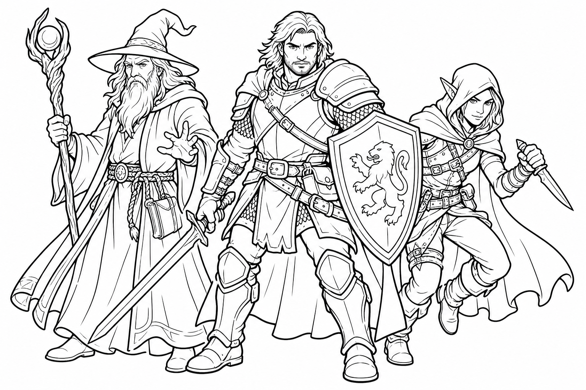
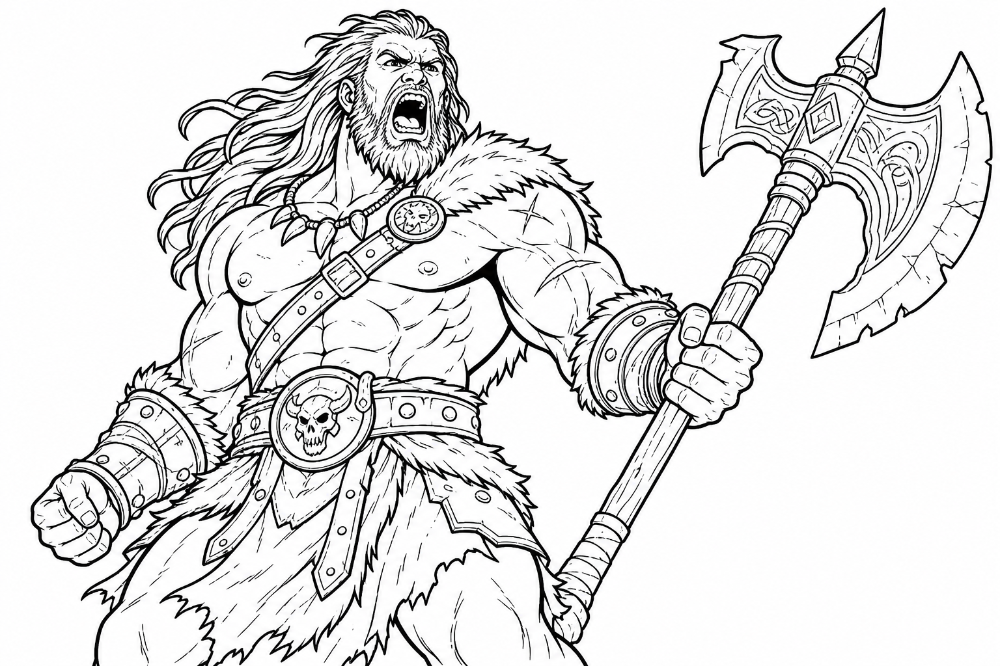
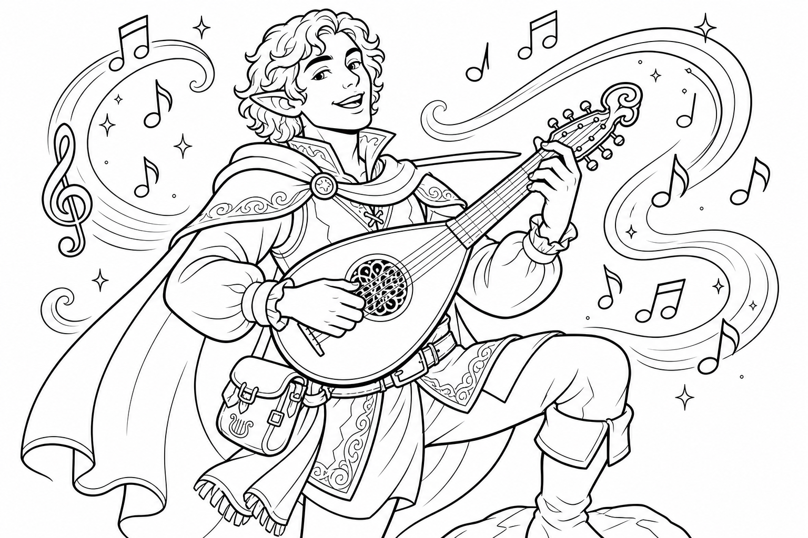
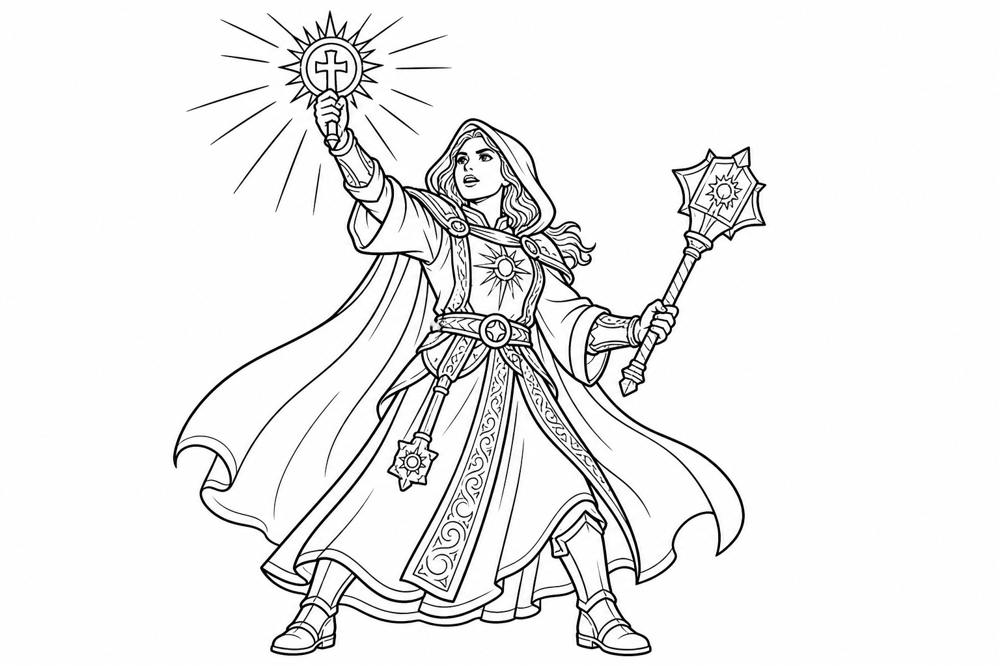
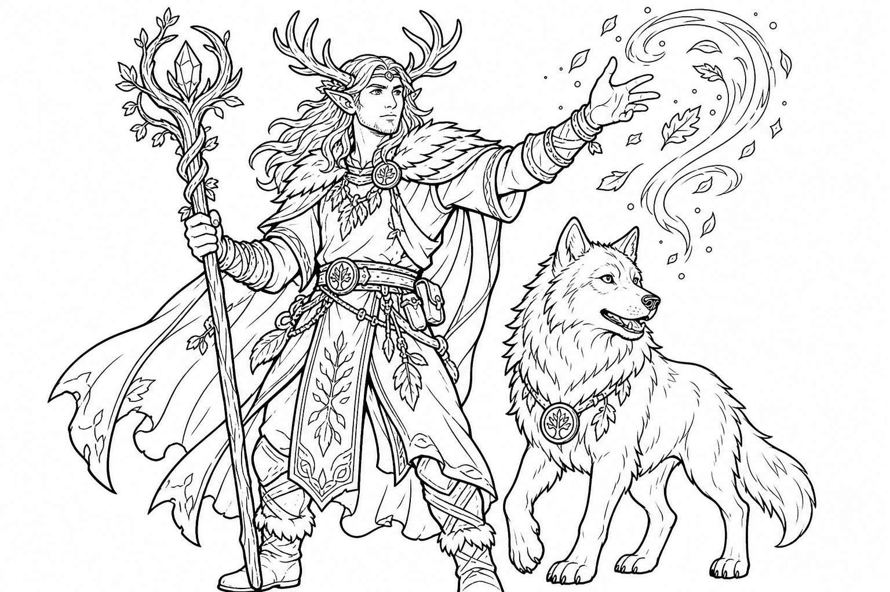
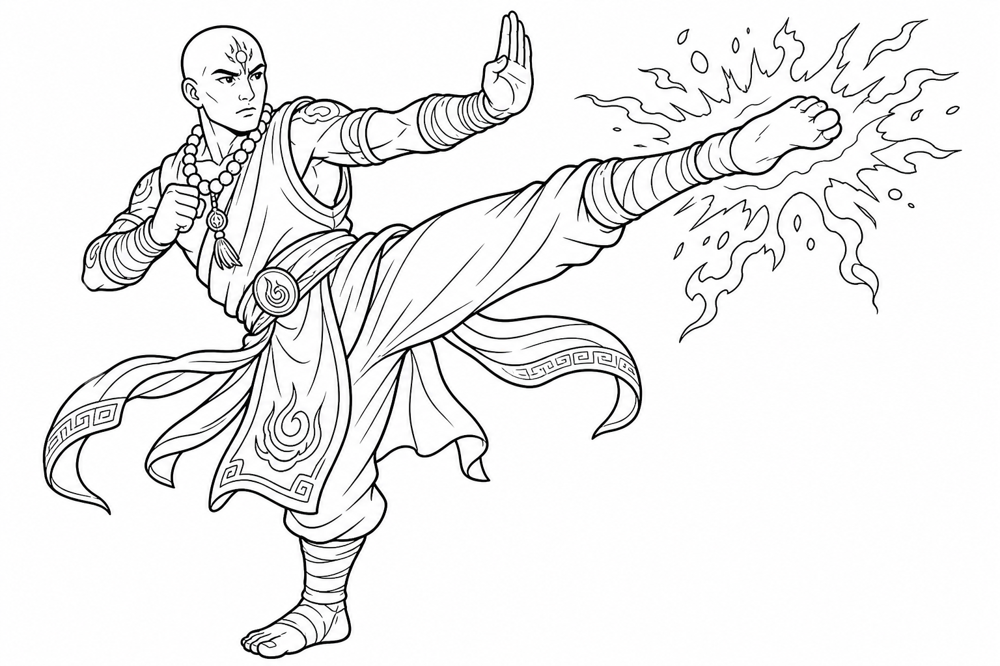
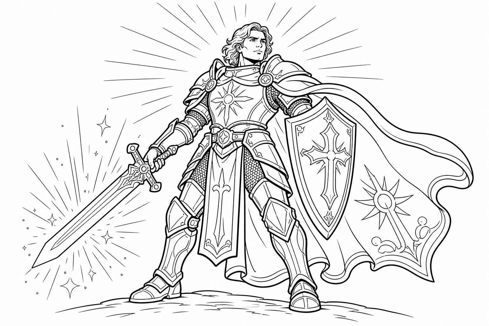
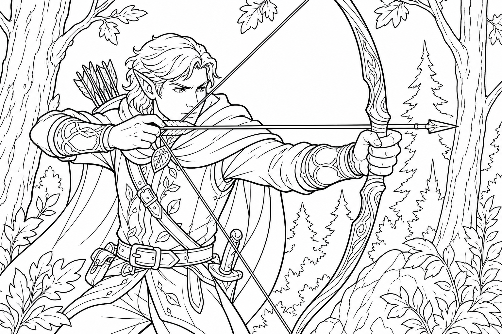
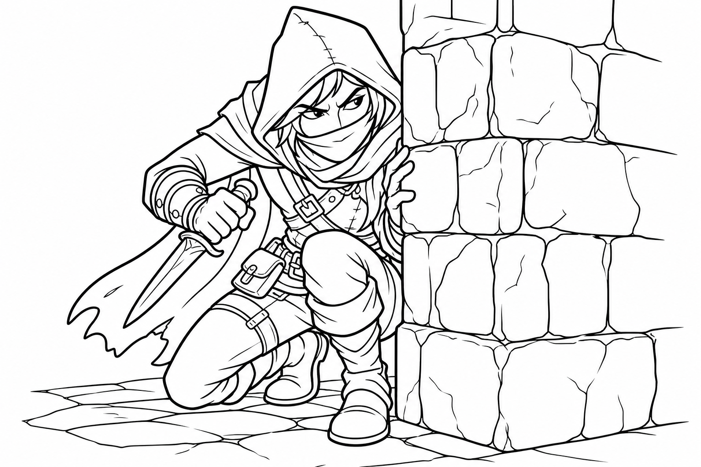
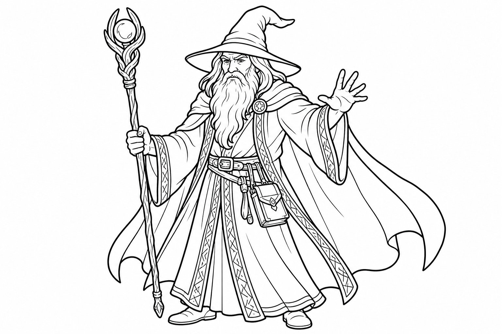

Choose your hero's job on the adventure team! Each class is great at different things in fights, exploration, and magic. Read the one that sounds the most fun!

The Barbarian
Unleash Your Inner Fury!
Are you ready to smash through doors, lift heavy boulders, and roar in the face of danger? The Barbarian is a fierce warrior who uses their anger to become an unstoppable force. You don't need fancy armor or complicated magic—just a giant weapon and a lot of courage!

Class Mechanics
😡 Rage
This is your superpower! As a Bonus Action, you can enter a Rage. While raging, you are a combat monster:
- You get Advantage on Strength checks and Strength saving throws.
- You deal extra damage when you hit with a melee weapon.
- You have Resistance to bludgeoning, piercing, and slashing damage (you take HALF damage from most weapons!).
Note: You can't cast spells or concentrate on them while raging. You're too angry!
Unarmored Defense
Barbarians are so tough they don't even need to wear armor! If you aren't wearing armor, your Armor Class (AC) is 10 + your Dexterity modifier + your Constitution modifier. Your muscles literally block swords!
Reckless Attack
When you really want to hit something, you can swing wildly! You can choose to have Advantage on your first attack on your turn. But be careful: if you do this, enemies also get Advantage to hit you until your next turn.
Strengths
- Super Tough: You have the highest Hit Points (health) of any class in the game!
- Massive Damage: With giant weapons and Rage damage, you hit incredibly hard.
- Simple to Play: You don't have to memorize a giant list of spells. You just rage and smash!
Weaknesses
- No Magic: You can't cast spells to solve problems.
- Ranged Combat: You are best up close. If a monster is flying or far away, you might have a hard time reaching them.
- Mind Tricks: You might be weak to spells that target your Wisdom or Intelligence.
Leveling Up (Levels 1-5)
As you go on adventures and defeat monsters, you earn Experience Points (XP). When you get enough XP, you level up! Here is what you get as you grow stronger:
| Level | New Powers! |
|---|---|
| Level 1 | Rage & Unarmored Defense: You start with your core powers! You can Rage 2 times per day. |
| Level 2 | Reckless Attack & Danger Sense: You can attack wildly for Advantage! Plus, Danger Sense gives you Advantage on Dexterity saving throws against things you can see (like traps and spells). |
| Level 3 | Primal Path: You choose your subclass! (See the next page). You also get 3 Rages per day. |
| Level 4 | Ability Score Improvement: You get stronger! You can add +2 to one of your stats (like Strength or Constitution) or +1 to two different stats. |
| Level 5 | Extra Attack & Fast Movement: You can attack TWICE every time you take the Attack action! You also move 10 feet faster. You are a speedy powerhouse! |
Subclasses (Primal Paths)
At Level 3, your Barbarian connects with a special kind of power called a Primal Path. Here are two fun, awesome choices:
🐻 Path of the Totem Warrior
You connect with animal spirits who lend you their magical strength when you rage!
- Bear Spirit: While raging, you resist ALMOST ALL damage (except psychic). You are basically indestructible!
- Eagle Spirit: You become super fast! Enemies have a hard time hitting you when you run past them.
- Wolf Spirit: You help your friends! Your friends get Advantage when attacking enemies standing next to you.
Pick this if you love animals and want to be the toughest tank in the game!
⚡ Path of the Storm Herald
Your rage creates a magical storm around you! When you rage, you blast enemies with weather magic.
- Desert Storm: You blast fire all around you, burning enemies who get too close!
- Sea Storm: You shoot lightning bolts at your foes and can breathe underwater!
- Tundra Storm: You freeze the ground, giving your friends temporary hit points (like an icy shield)!
Pick this if you want to mix your smashing with some awesome elemental magic!
Gear & Strategy
Choosing Your Weapons
Barbarians love big, heavy weapons that deal a lot of damage. Here are some great choices:
- Greataxe or Greatsword: These are huge two-handed weapons that deal massive damage. Perfect for a strong Barbarian!
- Battleaxe and Shield: If you want to be extra safe, you can hold a one-handed weapon and a shield to boost your Armor Class.
- Javelins: Always carry a few javelins! If a monster is flying or too far to hit with your axe, you can throw a javelin at them.
How to Fight Like a Barbarian
Your job in battle is to protect your friends by being the biggest threat in the room!
- Rage Early: Don't wait! Use your Bonus Action to Rage on your first turn so you start taking half damage right away.
- Charge the Boss: Find the biggest, scariest monster and run right up to it. Keep it busy so it doesn't attack your wizard or bard friends.
- Use Reckless Attack Smartly: If you really need to hit an enemy to finish them off, use Reckless Attack! Just remember they might hit you back harder.
Roleplaying Your Barbarian
Who Are You?
Barbarians often come from tribes, clans, or wild places far away from big cities. Think about your backstory:
- Did you grow up in a frozen tundra, a hot desert, or a deep jungle?
- Why did you leave your home to go adventuring? Are you looking for a legendary weapon? Trying to prove you are the strongest?
- What makes you Rage? Do you hate bullies? Are you protecting a younger sibling? Or do you just really hate spiders?
How to Act
You don't have to be a grumpy grump all the time! Barbarians can be loud, cheerful, and fiercely loyal to their friends.
- Be the Strong Friend: Offer to carry all the heavy treasure, kick down locked doors, or arm-wrestle the local tavern champion.
- Trust Your Instincts: You might not read a lot of books, but you have great survival instincts. You can smell danger and track animals!
- Protect the "Squishies": Treat your magic-user friends like little siblings. If anyone messes with them, show them your axe!
"You can keep your magic spells and fancy armor. I have my axe, my friends, and a whole lot of anger!"
Leveling Up (Levels 6-10)
Your adventures are getting more dangerous, but you are getting even stronger! Here is what happens as your Barbarian reaches level 10:
| Level | New Powers! |
|---|---|
| Level 6 | Path Feature: Your subclass gets a new power! For example, Bear Totem warriors become super strong and can lift incredibly heavy things. You also get 4 Rages per day! |
| Level 7 | Feral Instinct: You are like a wild animal! You get Advantage on Initiative rolls, meaning you almost always get to go first in battle. Nobody can surprise you! |
| Level 8 | Ability Score Improvement: Add +2 to one stat or +1 to two different stats to become even more powerful! |
| Level 9 | Brutal Critical: When you score a critical hit (rolling a 20!), you get to roll an EXTRA damage die. Your giant hits are now MEGA hits! |
| Level 10 | Path Feature: Another awesome subclass power! You also get 5 Rages per day. You can stay angry almost all day long! |
Famous Heroes & Legends
Throughout history, many mighty Barbarians have become legends. Which of these heroes sounds most like you?
🪓 Krog the Mountain-Breaker
Krog was a giant of a man who loved his friends more than anything. Legend says that when a dragon trapped his party in a cave, Krog got so mad that he punched the mountain until it broke apart, creating a tunnel for them to escape!
🐺 Sheera the Wolf-Rider
Sheera never walked if she could ride! She rode into battle on the back of a giant dire wolf. She was so fierce that even the monsters were scared of her loud, terrifying battle cry. She once arm-wrestled an ogre and won!
Best Magic Items
If you find a treasure chest, look for these awesome magic items! They are perfect for a Barbarian:
- Belt of Dwarvenkind: This magical wrestling belt gives you extra Constitution (more health!) and lets you grow a fabulous beard, even if you are not a dwarf!
- Cloak of the Manta Ray: A cool cape that lets you breathe underwater and swim super fast. Perfect for when you need to smash sea-monsters!
- Flametongue Weapon: A magical sword or axe that bursts into flames when you say a secret command word. It deals extra fire damage every time you hit!
- Boots of Striding and Springing: These boots make you jump incredibly far. You can leap right over the small monsters to attack the big boss!
Combat Cheat Sheet
What should you do on your turn? Use this quick guide to remember your options!
🟢 Action
Choose one big thing to do:
- Attack: Swing your big weapon! (At level 5, you get to swing TWICE!)
- Dash: Run twice as far if you need to catch up to a fast enemy.
- Shove or Grapple: Push a monster over or grab them so they can't run away!
🟡 Bonus Action
Choose one quick thing to do (if you have one):
- Rage!: Get angry! Do this on your very first turn so you take half damage and hit harder.
- Two-Weapon Fighting: If you hold a small weapon in each hand, you can attack with the second one.
🔴 Reaction
A quick move when it's NOT your turn:
- Opportunity Attack: If an enemy tries to run away from you without defending themselves, you get to smack them for free!
Draw Your Hero!
What does your mighty Barbarian look like? Draw them here!
- What is their name? ________________________________
- What is their favorite food? _________________________
- What do they yell when they Rage? _____________________
The Bard
Music, Magic, and Mischief!
Do you love to perform, tell jokes, and be the center of attention? The Bard is a magical musician or storyteller who uses their art to cast spells. You can heal your friends with a beautiful song, or insult a goblin so badly that it actually takes magic damage!

Class Mechanics
🎵 Bardic Inspiration
You can use a Bonus Action to give a friend a magical boost! You hand them a Bardic Inspiration die (usually a d6 to start). Within the next 10 minutes, when they roll a d20 for an attack, ability check, or saving throw, they can roll your special die and add it to their total. You literally cheer them on to victory!
Spellcasting
Bards are full spellcasters! You use your Charisma to cast spells. Your magic is focused on charming people, creating illusions, and healing. Instead of a magic wand, you can use a musical instrument (like a lute or a flute) to cast your spells!
Jack of All Trades
Bards pick up a lot of random skills while traveling. You get to add half of your Proficiency Bonus to any ability check that you aren't already proficient in. You're a little bit good at everything!
Strengths
- Amazing Support: You make everyone else in the party better with your Inspiration and healing magic.
- Skill Master: You are good at almost every skill, especially talking to people (Persuasion, Deception).
- Versatile Magic: You have a great mix of offensive, defensive, and tricky spells.
Weaknesses
- Squishy: You only wear light armor and don't have a lot of Hit Points. Keep your distance from big monsters!
- Not a Heavy Hitter: While you can do damage, you won't hit as hard with a sword as a Fighter or Barbarian.
Leveling Up (Levels 1-5)
As you go on adventures and tell epic stories, you earn Experience Points (XP). When you get enough XP, you level up! Here is what you get as your magic grows:
| Level | New Powers! |
|---|---|
| Level 1 | Spellcasting & Bardic Inspiration: You start with your magic spells and your d6 Inspiration dice to cheer on your friends! |
| Level 2 | Jack of All Trades & Song of Rest: You become a little bit good at every skill! Also, when your party takes a short rest, your soothing music helps everyone heal extra Hit Points. |
| Level 3 | Bard College & Expertise: You pick your subclass (see next page)! You also choose two of your skills to get "Expertise," making you incredibly good at them (like super-persuasion or super-stealth). |
| Level 4 | Ability Score Improvement: You get more charming! You can add +2 to one of your stats (like Charisma or Dexterity) or +1 to two different stats. |
| Level 5 | Font of Inspiration: Your Inspiration dice get bigger (they turn into d8s)! Plus, you get all your Inspiration dice back after a short rest, so you can cheer on your friends way more often. |
Subclasses (Bard Colleges)
At Level 3, Bards join a "College" to specialize in a specific type of performance and magic. Here are two awesome, fun choices:
⚔️ College of Valor
You are a battle-bard! You sing epic songs of ancient heroes while fighting right alongside the warriors.
- Combat Training: You learn how to wear medium armor, use shields, and fight with cool weapons like longswords and battleaxes!
- Combat Inspiration: Your friends can use your Bardic Inspiration to hit enemies harder (adding the die to their damage) or to dodge attacks (adding the die to their Armor Class)!
Pick this if you want to be a magical knight who fights with a sword in one hand and a horn in the other!
🎭 College of Lore
You are a collector of secrets, stories, and magic from all over the world. You know a little bit about everything!
- Bonus Proficiencies: You get to pick three more skills to be good at. You are the ultimate know-it-all!
- Cutting Words: You can use your reaction to magically insult or distract an enemy right when they attack, making them miss!
- Additional Magical Secrets (at Level 6): You can steal spells from OTHER classes! Want a Wizard's fireball or a Cleric's super-heal? You can learn it!
Pick this if you want to be a master of magic, skills, and clever insults!
Gear & Strategy
Choosing Your Gear
Bards travel light, but they carry the most important tools for adventure:
- Your Instrument: This is your magical focus! Will you play a lute, a flute, a drum, or maybe a set of bagpipes?
- Light Armor: Leather armor keeps you quick on your feet so you can dodge attacks.
- A Rapier or Rapier: A quick, elegant sword is perfect for a Bard. You can also carry a light crossbow to shoot from a safe distance!
How to Fight Like a Bard
Your job is to make your team amazing and make the enemies look silly!
- Stay Safe: You don't have a lot of health. Stand behind the Fighter or Barbarian and cast your spells from a distance.
- Hand Out Inspiration: Use your Bonus Action to give Bardic Inspiration to the friend who needs to make a big attack or a tough saving throw.
- Control the Battlefield: Use spells like Sleep or Tasha's Hideous Laughter to stop enemies from attacking. A sleeping goblin is a harmless goblin!
Roleplaying Your Bard
Who Are You?
Bards are the life of the party! Think about what kind of performer you are:
- Are you a famous rockstar looking for new fans, or a humble storyteller collecting ancient myths?
- What is your favorite instrument? Do you sing, dance, juggle, or do magic tricks?
- Why are you adventuring? To write the greatest epic poem ever? To find a magical lute? Or just to get rich and famous?
How to Act
You are the "Face" of the group. When it's time to talk, you step up to the microphone!
- Do the Talking: With your high Charisma, you are the best at persuading guards, haggling with shopkeepers, or calming down angry kings.
- Be Dramatic: Describe your magic! Don't just say "I cast a spell." Say "I strum a fiery chord on my lute and sparks fly from the strings!"
- Keep Spirits High: When the party is sad or scared, tell a joke, sing a song, or remind them of the great heroes of the past. You are their cheerleader!
"Why use a sword when a perfectly timed joke can hurt them just as much? Plus, the joke doesn't need sharpening!"
Leveling Up (Levels 6-10)
Your magic is getting stronger and your songs are getting catchier! Here is what happens as your Bard reaches level 10:
| Level | New Powers! |
|---|---|
| Level 6 | Countercharm & Subclass Feature: You can use your music to protect your friends from being frightened or charmed! You also get a cool new power from your Bard College. |
| Level 7 | 4th-Level Spells: You unlock super powerful spells! You can now cast Polymorph to turn a big scary monster into a harmless little turtle! |
| Level 8 | Ability Score Improvement: Add +2 to one stat or +1 to two different stats to become even more charming! |
| Level 9 | Song of Rest Upgrade & 5th-Level Spells: Your relaxing song heals even more during short rests. Plus, you unlock amazing spells like Greater Restoration! |
| Level 10 | Magical Secrets: This is the best Bard power! You can choose TWO spells from ANY other class (like a Wizard's Fireball or a Paladin's healing magic) and learn them forever! You also get Expertise in two more skills! |
Famous Heroes & Legends
Throughout history, many musical Bards have become legends. Which of these heroes sounds most like you?
🎸 Finnian the Lute-Smasher
Finnian didn't just play his magic lute; he rocked out! During a fight with an evil wizard, Finnian played a magical chord so loud that it shattered all the windows in the castle, and then he smashed his lute over the wizard's head to finish the fight!
✨ Piper the Story-Weaver
Piper could tell stories that actually came to life. Once, when surrounded by hungry trolls, she told a story about a massive feast. The trolls were so tricked by her magical words that they sat down to eat imaginary food while Piper and her friends tiptoed away!
Best Magic Items
If you find a treasure chest, look for these awesome magic items! They are perfect for a Bard:
- Instrument of the Bards: These are legendary magic instruments (like a special mandolin or harp). They make your spells harder to resist and let you cast extra spells like Invisibility or Fly for free!
- Cape of the Mountebank: A fabulous, sparkly cape that lets you cast the Dimension Door spell once a day. You step into a puff of pink smoke and teleport up to 500 feet away!
- Rhythm-Maker's Drum: A magical drum that makes your spellcasting stronger and helps you get your Bardic Inspiration dice back faster.
- Hat of Disguise: A stylish hat that lets you change what you look like at any time. You can trick guards into thinking you are the king!
Combat Cheat Sheet
What should you do on your turn? Use this quick guide to remember your options!
🟢 Action
Choose one big thing to do:
- Cast a Spell: This is your main job! Cast a spell to hurt bad guys, help your friends, or change the battlefield.
- Attack: Swing your rapier or shoot your crossbow if you don't want to use a spell slot.
- Hide or Dodge: If you are low on health, hide behind a rock or focus on dodging!
🟡 Bonus Action
Choose one quick thing to do (if you have one):
- Bardic Inspiration!: Give a magical d6 (or d8) die to a friend so they can add it to their roll. Always try to keep your friends inspired!
- Healing Word: Cast this quick spell to heal a friend from far away!
🔴 Reaction
A quick move when it's NOT your turn:
- Cutting Words (Lore Bard): If an enemy is about to hit your friend, insult them so badly that they miss!
- Opportunity Attack: Smack an enemy who tries to run past you.
Draw Your Hero!
What does your musical Bard look like? Draw them here!
- What is their name? ________________________________
- What is their favorite instrument? ___________________
- What is their best joke? ___________________________
The Cleric
Holy Power and Heavy Armor!
Do you want to be the hero who saves the day when everyone else is hurt? The Cleric gets their magic directly from a powerful god. You are the best healer in the game, but don't think you're just a doctor! You wear heavy armor, carry a shield, and can blast evil monsters with blinding holy light!

Class Mechanics
✨ Channel Divinity
You can channel the direct power of your god to create magical effects! The most famous one is Turn Undead. If you are fighting zombies or skeletons, you can hold up your holy symbol and blast them with light, forcing them to run away in terror!
Spellcasting
You use your Wisdom to cast spells. You have access to amazing healing spells like Cure Wounds and Healing Word. You also have great attack spells like Guiding Bolt, which hits enemies with a laser of light and helps your friends hit them on the next turn!
Divine Domain
At level 1, you choose a Domain (like Life, Light, or War) based on your god. This gives you special bonus spells that are always prepared, and cool extra powers. For example, a Life Cleric heals extra hit points every time they cast a healing spell!
Strengths
- Best Healer: Nobody keeps the team alive better than you.
- Tough to Kill: With medium or heavy armor and a shield, you have a very high Armor Class (AC).
- Versatile: You can fight on the front lines with a mace, or stand back and cast powerful spells.
Weaknesses
- Not Very Sneaky: Heavy armor makes a lot of noise, so you aren't great at Stealth.
- Target on Your Back: Smart monsters know to attack the healer first! You have to protect yourself.
Leveling Up (Levels 1-5)
As you prove your devotion to your god and help your friends, you earn Experience Points (XP). When you get enough XP, you level up! Here is how your divine power grows:
| Level | New Powers! |
|---|---|
| Level 1 | Spellcasting & Divine Domain: You start with your holy magic and pick your subclass (Domain) right away! You get special Domain spells that are always ready to use. |
| Level 2 | Channel Divinity (1/rest): You can use your god's power to Turn Undead, making zombies and skeletons run away! You also get a special Channel Divinity power from your Domain. |
| Level 3 | More Spells: You unlock 2nd-level spells! These are much stronger. You can now cast spells like Spiritual Weapon (a floating magic sword) or Lesser Restoration. |
| Level 4 | Ability Score Improvement: You become wiser or stronger! You can add +2 to one of your stats (like Wisdom or Strength) or +1 to two different stats. |
| Level 5 | Destroy Undead: When you use Turn Undead, weak zombies and skeletons don't just run away—they instantly explode into dust! You also unlock 3rd-level spells like Revivify (bring someone back from the dead!). |
Subclasses (Divine Domains)
Clerics get their subclass right at Level 1! Your Domain depends on which god you worship. Here are two awesome, kid-friendly choices:
❤️ Life Domain
You worship a god of healing, health, and home. You are the ultimate protector!
- Heavy Armor: You get to wear the heaviest, strongest armor in the game!
- Disciple of Life: Every time you cast a healing spell, it heals extra Hit Points! You are the best doctor in the world.
- Channel Divinity: Preserve Life: You can use your Channel Divinity to send out a massive wave of healing energy to fix up all your friends at once!
Pick this if you want to be the ultimate team player who makes sure nobody ever goes down in a fight!
☀️ Light Domain
You worship a god of the sun, fire, and truth. You blast away the darkness!
- Bonus Cantrip: You get the Light cantrip for free, so you can make any object glow like a torch!
- Warding Flare: When an enemy tries to hit you, you can use your reaction to flash a blinding light in their eyes, making them miss!
- Channel Divinity: Radiance of the Dawn: You can unleash a huge explosion of sunlight that burns all the monsters around you!
Pick this if you want to throw fireballs and shoot lasers of holy light!
Gear & Strategy
Choosing Your Gear
Clerics are ready for war. Here is what you should carry:
- Armor and Shield: Wear the best armor you can find (Scale Mail or Chain Mail) and hold a shield. Your Armor Class will be super high!
- A Holy Symbol: You need this to cast your spells! It could be an amulet you wear around your neck or a symbol painted right on your shield.
- A Mace or Warhammer: You don't just cast spells; you can also smash monsters with a heavy weapon!
How to Fight Like a Cleric
You are the anchor of the team. You keep everyone standing and blast the bad guys!
- Don't Be Afraid to Get Close: With your high armor, you can stand right next to the Fighter or Barbarian. You are tough!
- Save Your Healing: You don't need to heal every little scratch. Wait until a friend is really hurt, or use Healing Word as a Bonus Action if they fall down.
- Use Your Big Spells: Spells like Guiding Bolt do massive damage. Don't forget you can be a damage-dealer too!
Roleplaying Your Cleric
Who Are You?
Your faith is the most important thing to you. Think about your relationship with your god:
- Who is your god? Are they a god of sunshine, a god of the forge, or a god of nature?
- Why did you become a Cleric? Did you hear an angel's voice, or were you raised in a temple?
- Do you carry a holy book, a special candle, or a lucky coin from your temple?
How to Act
You are the moral compass of the group. You try to do the right thing and help people!
- Offer Blessings: When you meet nice people, tell them "May the sun shine upon you" or "May the forge keep you warm."
- Protect the Weak: If you see someone being bullied, step in! Your god wants you to be a hero.
- Pray for Guidance: When the party doesn't know what to do, you can say a quick prayer to your god for a good idea.
"The light of my god protects my friends, and burns away the darkness. Stand behind my shield!"
Leveling Up (Levels 6-10)
Your connection to your god is getting stronger every day! Here is what happens as your Cleric reaches level 10:
| Level | New Powers! |
|---|---|
| Level 6 | Channel Divinity (2/rest) & Domain Feature: You can use your awesome Channel Divinity powers TWICE before needing a rest! You also get a new power from your subclass. |
| Level 7 | 4th-Level Spells: You unlock super powerful spells! You can now cast Banishment to send a bad guy to another dimension! |
| Level 8 | Ability Score Improvement & Divine Strike: Add +2 to one stat or +1 to two different stats! PLUS, your god makes your weapons magical! When you hit with your mace, it deals extra damage! |
| Level 9 | 5th-Level Spells: You unlock amazing spells like Mass Cure Wounds to heal your entire team at the exact same time! |
| Level 10 | Divine Intervention: This is amazing! Once a week, you can pray to your god for help. You roll a special die, and if you succeed, your god will literally reach down from the sky and solve your problem! |
Famous Heroes & Legends
Throughout history, many holy Clerics have become legends. Which of these heroes sounds most like you?
🛡️ Thalia the Shield of Dawn
Thalia was a Life Cleric who refused to let anyone get hurt. During a massive battle against an army of goblins, she stood in a narrow bridge for 12 hours straight! She healed her friends and blocked every arrow with her glowing, magical shield until the goblins finally gave up and went home.
☀️ Corvus the Sun-Bringer
Corvus was a Light Cleric who hated the dark. When a sleepy village was cursed by a vampire to be in permanent nighttime, Corvus climbed to the highest tower, used his Channel Divinity, and unleashed an explosion of sunlight so bright that it chased the vampire away forever!
Best Magic Items
If you find a treasure chest, look for these awesome magic items! They are perfect for a Cleric:
- Amulet of the Devout: A super holy necklace that makes your spell attacks hit harder and gives you one extra use of Channel Divinity every single day!
- Mace of Disruption: A magical mace that deals tons of extra holy damage, especially to evil zombies, vampires, and ghosts!
- Shield of Missile Attraction: This might sound weird, but it's great! It makes enemy arrows curve through the air to hit YOU instead of your squishy Wizard friends. Since your armor is so high, the arrows just bounce off!
- Winged Boots: Heavy armor makes it hard to jump, but these boots let you FLY! You can soar up to heal your friends or blast flying dragons.
Combat Cheat Sheet
What should you do on your turn? Use this quick guide to remember your options!
🟢 Action
Choose one big thing to do:
- Cast a Spell: Use a big healing spell like Cure Wounds, or blast a bad guy with Guiding Bolt!
- Attack: Swing your mace or warhammer to smash an enemy!
- Channel Divinity: Use your holy symbol to Turn Undead or use your Domain's special power!
🟡 Bonus Action
Choose one quick thing to do (if you have one):
- Healing Word: The best spell! You can shout a magic word to heal a friend without even walking over to them.
- Spiritual Weapon: Command a floating magical sword to smack an enemy!
🔴 Reaction
A quick move when it's NOT your turn:
- Warding Flare (Light Cleric): Flash a bright light in a monster's eyes right when they try to hit you so they miss!
- Opportunity Attack: Smack an enemy who tries to run past you.
Draw Your Hero!
What does your holy Cleric look like? Draw them here!
- What is their name? ________________________________
- What is the symbol of their God? _____________________
- What is their favorite prayer? _______________________
The Druid
Master of the Wild!
Do you love animals, plants, and the power of nature? The Druid is a magical protector of the wilderness. You can summon lightning storms, talk to animals, make vines grow to trap your enemies, and—best of all—magically transform into animals yourself!

Class Mechanics
🐻 Wild Shape
This is your coolest power! You can magically turn into an animal you have seen before. You could become a sneaky spider to spy on guards, a fast horse to run away, or a giant bear to fight monsters! When you are an animal, you get their Hit Points. If your animal form drops to 0 Hit Points, you just turn back into your normal self!
Nature Spellcasting
You use your Wisdom to cast spells. Your magic is all about nature. You can heal friends, shoot fire, create fog, or summon magical animals to fight for you. You use a druidic focus (like a special wooden staff or a piece of mistletoe) to cast your spells.
Druidic Language
You know a secret language called Druidic. You can leave hidden messages on trees or rocks that only other Druids can read!
Strengths
- Super Versatile: You can heal, fight, use magic, and sneak around. You can do a little bit of everything!
- Extra Health: Wild Shape gives you a whole second health bar! You are very hard to defeat.
- Great Explorer: You are amazing at surviving in the woods and finding paths.
Weaknesses
- No Metal Armor: Druids refuse to wear armor or use shields made of metal, so your Armor Class (AC) might be a little lower than a Fighter's.
- Complicated: You have to manage your spells AND remember the stats for the animals you turn into.
Leveling Up
As you adventure and defeat monsters, you will level up! Every time you level up, you get stronger and learn awesome new nature magic.
| Level | Awesome New Powers! |
|---|---|
| 1 | Spellcasting & Druidic: You learn how to cast nature spells and speak the secret Druidic language with other protectors of the forest! |
| 2 | Wild Shape & Subclass: This is huge! You can now turn into animals! You also pick your Druid Circle (your subclass) which gives you special unique abilities. |
| 3 | Level 2 Spells: Your magic gets much stronger! You can now cast spells like Flaming Sphere to burn enemies or Pass without Trace to make your whole team super stealthy. |
| 4 | Ability Score Improvement: You get smarter, faster, or tougher! You can increase your Wisdom to make your spells better. Plus, your Wild Shape gets better—you can now turn into swimming animals like a Crocodile! |
| 5 | Level 3 Spells: You unlock incredibly powerful magic. You can cast Call Lightning to blast enemies with stormy weather or Revivify to bring a fallen friend back to life! |
Leveling Up Tip!
Always try to increase your Wisdom when you can. It makes your spells hit harder and makes it harder for monsters to dodge your magic!
Subclasses: Druid Circles
At Level 2, you choose a "Druid Circle." This is the special group of druids you belong to, and it gives you really fun new powers! Here are two amazing, fun choices:
🌕 Circle of the Moon
Do you love turning into animals? Then this is for you! Moon Druids are the absolute best at Wild Shape. While other Druids might turn into a tiny wolf, you can turn into a massive Dire Wolf or a huge Brown Bear very early on!
- Combat Wild Shape: You can transform as a Bonus Action instead of a regular Action. This means you can turn into a bear AND attack on the exact same turn!
- Tougher Forms: You can transform into much stronger animals with more health and better attacks.
- Magical Healing: While you are in animal form, you can use your spell slots to heal yourself. You are almost impossible to defeat!
⭐ Circle of the Stars
Do you love looking up at the night sky? Star Druids draw their magic from constellations. You get a special Star Map (it could be drawn on a piece of tree bark or a glowing crystal) that gives you awesome space magic!
- Starry Form: Instead of turning into a normal animal, you can use your Wild Shape to become a glowing, starry version of yourself!
- The Archer: In Starry Form, you can shoot glowing magical arrows of light as a Bonus Action!
- The Chalice: In Starry Form, your healing magic gets a huge boost, letting you heal two people at once!
- The Dragon: In Starry Form, you become super focused, making it very hard for enemies to break your magical concentration.
Gear & Strategy
What Gear Should I Use?
Druids are a little unique because they will not wear metal armor or use metal shields. They believe in keeping things natural!
- Armor: You will start with Leather Armor. Later, look for Hide Armor or armor made out of magical wood, dragon scales, or tough animal shells!
- Shield: A sturdy wooden shield is your best friend. It gives you a +2 to your Armor Class (AC).
- Weapons: A magical wooden Quarterstaff or a curved sword called a Scimitar are great choices. You can even cast a spell called Shillelagh to make your wooden stick hit as hard as a giant sword!
How to Fight Like a Druid
Because you can do so many things, you have to choose your role in battle:
- The Blaster: Stand behind your tough friends (like the Fighter or Barbarian) and cast spells like Moonbeam or Ice Storm to hurt the bad guys from far away.
- The Healer: Keep an eye on your friends' health! If someone gets hurt, use Cure Wounds or Healing Word to fix them up.
- The Bear (Wild Shape): If the bad guys get too close, turn into a big animal! A Brown Bear has a lot of health and can attack twice per turn. It's a great way to protect your team.
Strategy Secret
Use Entangle! It's a Level 1 spell that makes magical vines grab enemies. If they are trapped, they can't move, and your friends will have an easier time hitting them!
Roleplaying Your Druid
Roleplaying is how you act and talk like your character. Druids are deeply connected to the earth, but every Druid is different! How will you play yours?
Where Did You Come From?
- The Deep Forest: You grew up among ancient, giant trees and talk to squirrels and birds more easily than people.
- The High Mountains: You are used to freezing cold and soaring eagles. You might be a bit wild and stormy!
- The Swamp: You know all about weird bugs, creepy glowing moss, and tricky frogs. You aren't afraid of getting muddy!
Fun Quirks & Habits
Give your character a fun habit to make them memorable!
- You refuse to sleep in a bed at an inn, preferring to sleep outside in the dirt or up in a tree.
- You always collect interesting leaves, rocks, or shiny bugs that you find on your adventure.
- You accidentally talk to the horses pulling your wagon instead of the person driving it.
- When you cast spells, your eyes glow with a green or starry light, and the smell of rain fills the air.
Be the Voice of Nature!
If you see someone littering or hurting an innocent animal, your Druid should definitely step in and tell them off! You are nature's superhero!
Leveling Up (Levels 6 to 10)
Your magic is growing even wilder! From levels 6 to 10, you become a true master of nature, unlocking epic new abilities.
| Level | Awesome New Powers! |
|---|---|
| 6 | Subclass Feature: Your Druid Circle gives you a new power! Moon Druids can now magically bypass monster defenses, and Star Druids get to use a glowing cosmic reaction to help friends! |
| 7 | Level 4 Spells: You can cast giant spells! Turn your enemies into harmless animals with Polymorph or summon creatures from the forest with Conjure Woodland Beings. |
| 8 | Ability Score Improvement: Boost your Wisdom even higher to make your spells super hard to dodge, or pick a new fun Feat! Plus, Wild Shape lets you turn into flying animals like Giant Eagles! |
| 9 | Level 5 Spells: Time for huge magic! You can cast Mass Cure Wounds to heal your whole team at once, or bring a whole tree to life to fight for you with Awaken. |
| 10 | Subclass Feature: Your Circle power grows again! Moon Druids can now turn into awesome Elemental creatures (like a fire or water elemental)! |
Leveling Up Tip!
Now that you can fly as an animal, use it to scout out dangerous areas from the sky, or carry your friends to safety!
Famous Heroes & Legends
Throughout history, powerful Druids have protected the natural world from evil. Here are a few legendary heroes to inspire you:
🌳 Keyleth of the Air Ashari
A clumsy but incredibly powerful half-elf druid who learned to master the elements. She can turn into giant beasts, fly through the air, and has a magical crown made of antlers!
🦅 Halsin, Keeper of the Grove
A massive, friendly elf druid who is built like a mountain but loves nature more than anything. His favorite Wild Shape form is a gigantic cave bear, and he helps protect a beautiful grove from scary goblins.
🍄 Faldorn the Shadow Druid
A legend from the past who believed nature was stronger than any city. She fought fiercely to protect the wild using swarms of bugs and ferocious wolves. She reminds us that nature can be wild and untamed!
Create Your Legend
What will your story be? Will you be the hero who saves a magical forest from a terrible dragon, or the druid who learns how to speak with ancient trees?
Best Magic Items
As you explore dungeons and find treasure, look out for these amazing magic items that are absolutely perfect for a Druid!
🌿 Staff of the Woodlands
This is the ultimate Druid weapon! It looks like a living branch. It lets you cast extra spells like Wall of Thorns and can even turn into a giant, living tree that fights for you!
🌙 Moon Sickle
A beautiful silver blade that glows in the dark. It makes all of your healing spells work better, adding an extra burst of magical moonlight to fix up your friends!
🧥 Cloak of the Manta Ray
A super cool cape that lets you breathe underwater and swim as fast as a fish! It’s perfect for exploring underwater caves or escaping from a sea monster.
🎒 Bag of Tricks
Reach into this magical bag and pull out a fuzzy little ball. Throw it on the ground, and it turns into a random friendly animal (like a giant badger or a weasel) to help you out!
Combat Cheat Sheet
Battles can be crazy! Use this quick guide to remember what you can do on your turn.
🟢 1. Your Action (Pick One!)
- Cast a Spell: Use your magic to blast enemies or heal a friend!
- Wild Shape: Turn into an animal (unless you are a Moon Druid, then it's a Bonus Action!).
- Attack: Hit a bad guy with your wooden staff or scimitar!
- Animal Attack: If you are already in Wild Shape, use your animal's bite or claw!
🟡 2. Your Bonus Action (If you have one!)
- Cast a Quick Spell: Some spells (like Healing Word) are super fast!
- Moon Druid Wild Shape: Turn into a bear and still attack on the same turn!
- Shillelagh: Make your wooden club magically glow and hit harder!
🔴 3. Your Reaction (Not on your turn!)
- Attack of Opportunity: If an enemy tries to run away from you, you get one free swing at them!
- Absorb Elements: Some magical items or spells let you catch elemental magic and throw it back!
Draw Your Hero!
Every legendary hero needs a portrait. What does your Druid look like? Do they have leaves in their hair? What is their favorite animal to turn into?
- What is your Druid's name? ________________________________
- What is your favorite Wild Shape? ________________________________
- What is your favorite food to eat in the forest? ________________________
The Fighter
The Ultimate Weapon Master!
Do you want to be the best at combat? The Fighter is an expert with every weapon and every piece of armor in the world. Whether you want to be an archer shooting arrows from afar, a knight with a sword and shield, or a warrior swinging a giant hammer, the Fighter is for you!

Class Mechanics
⚔️ Action Surge
This is what makes Fighters amazing! Once per short rest, you can push yourself past your normal limits and take a whole extra Action on your turn. You can use this to attack twice as many times, run super far, or attack and then dodge!
Second Wind
Fighters never give up! On your turn, you can use a Bonus Action to catch your breath and magically heal yourself for 1d10 + your Fighter level. You can do this once per short rest, which keeps you in the fight longer!
Fighting Style
At level 1, you choose what kind of fighter you are. You get a permanent bonus based on your style! For example, the Archery style makes you more accurate with bows, while the Defense style gives you +1 to your Armor Class when wearing armor.
Strengths
- Combat King: You are the most reliable damage dealer in the game.
- Tough: You can wear heavy armor, use shields, and heal yourself with Second Wind.
- Lots of Attacks: As you level up, you get to attack more times per turn than any other class!
Weaknesses
- No Magic: Unless you choose a specific subclass later, you don't get any spells.
- Out of Combat: You don't have as many skills for talking or sneaking as a Rogue or a Bard.
Leveling Up
Every time you level up, your fighting skills become more legendary. Let's see what awesome powers you unlock from Levels 1 to 5!
| Level | Awesome New Powers! |
|---|---|
| 1 | Fighting Style & Second Wind: Pick your favorite way to fight (like Archery or Two-Weapon Fighting). Plus, you can instantly heal yourself with Second Wind in the middle of battle! |
| 2 | Action Surge: You are so fast and skilled that you can take an entire EXTRA Action on your turn! Double the attacks, double the fun! |
| 3 | Martial Archetype (Subclass): You choose your special Fighter path! Will you be a magical warrior, a tactical commander, or a pure champion of strength? |
| 4 | Ability Score Improvement: You can increase your Strength or Dexterity to hit harder and more often, or take a "Feat" to learn a special trick! |
| 5 | Extra Attack: The best level ever! Whenever you take the Attack action, you get to swing your weapon TWICE instead of once. Paired with Action Surge, you can attack FOUR times in one turn! |
Leveling Up Tip!
If you use big swords, boost your Strength. If you use bows or nimble swords (like Rapiers), boost your Dexterity. Always try to make your main attacking stat higher!
Subclasses: Martial Archetypes
At Level 3, you choose your "Martial Archetype." This is the special fighting technique you have mastered. Here are two incredibly fun subclasses to pick:
🏆 The Champion
Do you want to hit the bad guys really, really hard? The Champion is all about pure, incredible physical power. You train your body to be the absolute best.
- Improved Critical: Normally, you only get a Critical Hit (double damage!) when you roll a 20 on the 20-sided die. As a Champion, you get a Critical Hit on a 19 AND a 20! You will deal huge damage much more often.
- Remarkable Athlete: You become a master at jumping, running, and climbing. You can jump farther than anyone else, making it easy to leap over pits or jump onto monsters!
🏹 The Arcane Archer
Why choose between a bow and magic when you can have both? Arcane Archers are fighters who have learned elven magic. They shoot special glowing arrows that have amazing magical effects!
- Arcane Shots: Twice per rest, you can unleash a super-powered magical arrow. You get to pick which ones you know!
- Grasping Arrow: Your arrow wraps the enemy in poisonous, thorny brambles, slowing them down and hurting them if they try to move!
- Bursting Arrow: Your arrow hits the target and then explodes with force energy, hurting all the bad guys standing nearby!
- Seeking Arrow: You can shoot an arrow that curves around corners to hit an enemy you can't even see!
Gear & Strategy
What Gear Should I Use?
You can use anything, so pick what sounds the coolest to you!
- Armor: If you are strong, wear Heavy Armor (like Chain Mail or Plate Armor). You will be an unstoppable tank! If you are fast and stealthy, wear Light or Medium Armor.
- Shield: If you want to protect yourself and your friends, hold a shield! It makes you very hard to hit.
- Weapons:
- For big damage: A Greatsword or a Greataxe (uses 2 hands).
- For defense: A Longsword or Warhammer with a Shield (uses 1 hand).
- For range: A Longbow to shoot from safety!
How to Fight Like a Fighter
You are the leader on the battlefield. Here is how you win the day:
- Be the Wall: Stand in the front! Put yourself between the scary monsters and your squishy friends (like Wizards and Bards). Let the monsters try to hit your high Armor Class!
- Focus Fire: Pick the most dangerous enemy and hit them with everything you have. Use your Action Surge to take them out before they can hurt your team.
- Don't Be Afraid: You have high health and Second Wind. Don't be afraid to take a few hits to save your friends. You are tough enough to handle it!
Strategy Secret
Save your Action Surge for a tough moment! If the boss monster is almost defeated, or if a friend is in trouble and needs you to run over and help right now, Action Surge is the ultimate hero button!
Roleplaying Your Fighter
Fighters are brave warriors, but they can come from anywhere! A Fighter can be a royal knight, a pirate, or a farm kid who picked up a pitchfork to save the village.
Where Did You Come From?
- The Noble Knight: You wear shiny armor and serve a king or queen. You are very polite and always keep your promises.
- The Gladiator: You fought in the grand arena for cheering crowds! You love showing off your cool weapon spins and trick shots.
- The Veteran Soldier: You used to be in an army. You are serious, organized, and always keep your gear perfectly clean.
Fun Quirks & Habits
Give your character a fun habit to make them memorable!
- You name all your weapons and talk to them while you polish them by the campfire.
- You challenge everyone you meet to an arm-wrestling contest.
- You are secretly afraid of something very silly, like spiders or the dark, even though you fight giant dragons.
- You loudly yell a super cool battle cry every time you use Action Surge!
Be the Brave Leader!
When the team is scared to open a dark door or fight a scary monster, your Fighter should step up and say, "Stand behind me! I've got this!"
Leveling Up (Levels 6 to 10)
You are becoming an unstoppable force on the battlefield! From levels 6 to 10, your fighting skills reach legendary levels.
| Level | Awesome New Powers! |
|---|---|
| 6 | Ability Score Improvement: Fighters get more of these than anyone else! Boost your Strength or Dexterity, or learn a cool new Feat (like becoming a master with a shield)! |
| 7 | Subclass Feature: Your Martial Archetype gives you a new trick! Champions get a bonus to jumping and moving, while Arcane Archers learn magical curving arrows! |
| 8 | Ability Score Improvement: Another one! Keep boosting those stats so you never miss an attack, or learn how to wear heavy armor even better. |
| 9 | Indomitable: If you fail a saving throw (like trying to dodge a dragon's fire breath or resist mind-control magic), you can reroll the dice and try again! You refuse to quit! |
| 10 | Subclass Feature: Champions get to pick a second Fighting Style (now you can be great at archery AND defense!), while Arcane Archers learn even more magical shots! |
Leveling Up Tip!
Don't forget to use your Indomitable power when things look bad. A true Fighter never gives up!
Famous Heroes & Legends
Throughout history, brave Fighters have stood on the front lines to protect the world. Here are a few legendary heroes to inspire you:
🛡️ Bruenor Battlehammer
A tough and grumpy dwarf with a heart of gold. He uses a legendary axe and a shield with a foaming mug symbol on it. He is a loyal friend and the king of his dwarf clan!
🗡️ Lae'zel of Crèche K'liir
A fierce alien warrior called a Githyanki. She rides flying red dragons and fights with an incredibly sharp silver sword. She is all about discipline, strength, and never backing down from a challenge.
🏹 Percy de Rolo
A brilliant fighter who used his smarts to invent a brand new weapon! Instead of a sword or bow, he fights from a distance using gadgets and sharp shooting to help his friends.
Create Your Legend
What will your story be? Will you be the knight who defeats the evil king, or the gladiator who wins the grand tournament?
Best Magic Items
As you explore dangerous dungeons, keep your eyes open for these amazing magic items that are absolutely perfect for a Fighter!
🔥 Flametongue Sword
Speak a magical command word, and this sword bursts into bright, hot flames! It does extra fire damage every time you hit a bad guy and doubles as a great torch in dark caves.
🛡️ Sentinel Shield
A magical shield with a glowing, watchful eye painted on the front. It actually helps you see better and makes sure enemies can never surprise you or sneak up on you!
👢 Boots of Striding and Springing
These enchanted boots make you move faster and let you jump incredibly high! You can leap over giant holes, jump right over enemies, or reach tall ledges with ease.
🗡️ Dancing Sword
You can throw this sword into the air, and it will magically fly around and fight enemies all by itself while you use another weapon! It's like having an extra helper in battle.
Combat Cheat Sheet
Battles can be crazy! Use this quick guide to remember what you can do on your turn.
🟢 1. Your Action (Pick One!)
- Attack: Swing your sword or shoot your bow! (Remember, at Level 5 you get to do this TWICE per Action!)
- Dodge: Focus entirely on defense to make it super hard for enemies to hit you.
- Help: Give a friend an advantage on their next attack!
🟡 2. Your Bonus Action (If you have one!)
- Second Wind: Catch your breath and heal yourself for free!
- Two-Weapon Fighting: If you are holding two light weapons (like two daggers), you get a free extra attack!
🔴 3. Your Reaction (Not on your turn!)
- Attack of Opportunity: If an enemy tries to run away from you, you get one free swing to stop them!
- Protection Style: If you have a shield and the Protection style, you can block an attack meant for your friend!
⭐ Special: ACTION SURGE!
Once per short rest, you can push the "I win" button and take a whole extra Action right now!
Draw Your Hero!
Every legendary hero needs a portrait. What does your Fighter look like? What kind of armor do they wear? Do they have a really cool, giant sword?
- What is your Fighter's name? ________________________________
- What is your favorite weapon to use? ________________________________
- What is your favorite food to eat after a battle? ________________________
The Monk
Fast, Focused, and Furious!
Do you want to be a martial arts master who can catch arrows out of the air and run up walls? The Monk doesn't need heavy armor or giant swords. You use your speed, agility, and a magical energy called Ki to punch, kick, and dodge faster than anyone else!

Class Mechanics
🥋 Martial Arts
Your hands and feet are deadly weapons! When you attack with a Monk weapon (like a staff or nunchucks) or an unarmed strike, you can use your Dexterity instead of Strength. Even better, when you use your Action to attack, you can make one unarmed strike as a Bonus Action for free!
Ki Points
Starting at level 2, you get Ki points (magical energy). You can spend these points to do amazing ninja moves:
- Flurry of Blows: Spend 1 Ki point to make TWO unarmed strikes as a Bonus Action!
- Patient Defense: Spend 1 Ki point to take the Dodge action as a Bonus Action.
- Step of the Wind: Spend 1 Ki point to Disengage or Dash as a Bonus Action, and your jump distance is doubled!
Unarmored Defense
Monks are too fast to hit! If you aren't wearing armor or using a shield, your Armor Class (AC) is 10 + your Dexterity modifier + your Wisdom modifier.
Strengths
- Super Fast: You have the highest movement speed in the game. You can run all the way across the battlefield in seconds!
- Lots of Attacks: With Flurry of Blows, you can hit enemies many times in a single turn.
- Great Defense: You are amazing at dodging attacks and spells.
Weaknesses
- Low Health: You don't have as many Hit Points as a Fighter or Barbarian, so you can't take too many hits.
- Ki Dependent: If you run out of Ki points, you lose a lot of your coolest powers (but they come back after a short rest!).
Leveling Up
As you train your mind and body, you unlock incredible new abilities. Watch your Monk go from a martial arts student to a legendary master!
| Level | Awesome New Powers! |
|---|---|
| 1 | Unarmored Defense & Martial Arts: You are fast enough to dodge without armor, and your punches are as strong as weapons! |
| 2 | Ki Points & Fast Movement: You unlock your magical Ki energy! You also permanently get faster, letting you outrun almost anyone. |
| 3 | Monastic Tradition & Deflect Missiles: You choose your Monk subclass! Even cooler, if someone shoots an arrow at you, you can use your reaction to CATCH IT out of the air! |
| 4 | Slow Fall & Ability Score Improvement: You can fall from super high places and use your acrobatics to take almost no damage! You also get to boost your Dexterity or Wisdom. |
| 5 | Extra Attack & Stunning Strike: You can attack twice per turn! Also, you can spend a Ki point when you punch someone to completely STUN them, making them unable to move or act! |
Leveling Up Tip!
Your two most important stats are Dexterity (for punching and dodging) and Wisdom (for your Ki abilities). Try to get both of them as high as possible!
Subclasses: Monastic Traditions
At Level 3, you choose your "Monastic Tradition." This is the special school of martial arts you follow. Here are two amazingly fun subclasses to choose from:
👊 Way of the Open Hand
This is the ultimate kung fu master! You focus entirely on making your punches and kicks as powerful and tricky as possible. You learn how to knock bad guys flying across the room!
- Open Hand Technique: Whenever you use Flurry of Blows, you can add extra effects to your punches! You can:
- Knock the enemy completely flat on their back!
- Push the enemy 15 feet away from you!
- Stop the enemy from taking reactions, allowing you to run away safely!
🔥 Way of the Four Elements
Do you want to control the elements like the Avatar? This tradition teaches you how to bend fire, water, earth, and air using your martial arts!
- Elemental Disciplines: You can spend your Ki points to cast elemental spells while you fight!
- Fangs of the Fire Snake: Your punches stretch out with ribbons of fire, letting you punch bad guys from far away with fiery damage!
- Water Whip: You can create a giant whip made of water that can pull enemies toward you or knock them down!
- Fist of Unbroken Air: You punch the air so hard that it creates a blast of wind, pushing enemies away like a hurricane!
Gear & Strategy
What Gear Should I Use?
Monks travel light! You don't need much to be dangerous.
- Armor: None! Armor slows you down. Your Unarmored Defense is all you need.
- Weapons: A Quarterstaff or a Spear. You can hold them with two hands for extra damage, and then use your Bonus Action to kick! Darts are great for throwing from a distance.
- Items: A simple backpack, a water skin, and some rope. You rely on your skills, not heavy backpacks!
How to Fight Like a Monk
You are a Hit-and-Run Skirmisher. You should never stand perfectly still in a fight!
- Target the Weak: Use your super speed to run past the big, slow monsters in the front. Run right to the enemy spellcasters or archers hiding in the back and beat them up!
- Stun the Boss: At level 5, Stunning Strike is your best friend. If you hit the biggest, scariest boss monster and Stun them, your whole team will easily defeat them while they can't move!
- Use Step of the Wind: If you are surrounded by too many enemies and getting hurt, spend 1 Ki point to Disengage and run away as fast as lightning.
Strategy Secret
Always remember you have a Bonus Action punch! If you use a Quarterstaff with your main Action, don't forget to declare "And then I do a spinning kick as my Bonus Action!" for extra free damage.
Roleplaying Your Monk
Monks are usually very disciplined, but that doesn't mean they are boring! Your Monk could be a wise old master, a mischievous ninja, or a young student eager to prove themselves.
Where Did You Come From?
- The Hidden Monastery: You grew up in a temple high on a snowy mountain, studying ancient scrolls and practicing kicks in the snow.
- The Street Fighter: You didn't go to a fancy school. You learned to fight on the tough city streets to protect your friends.
- The Traveling Seeker: You left your temple to travel the whole world, seeking to learn every martial art style from every master you can find!
Fun Quirks & Habits
Give your character a fun habit to make them memorable!
- You insist on meditating for one hour every morning, no matter what crazy adventure is happening.
- You love to give confusing, wise-sounding proverbs to your friends (like "The flowing river does not ask the rock for directions").
- You love eating, and you are always looking for new, exotic foods to try in every town.
- Before a fight starts, you calmly bow to your enemies as a sign of respect.
Be the Voice of Reason!
When the rest of the party is arguing about what to do, you can sit down quietly, close your eyes, and suggest a calm, smart plan. You are the peaceful center of the group!
Leveling Up (Levels 6 to 10)
Your speed and power are reaching amazing new levels! From levels 6 to 10, you become a master of magical Ki energy.
| Level | Awesome New Powers! |
|---|---|
| 6 | Ki-Empowered Strikes: Your punches and kicks are now counted as magical! This means you can easily hurt ghosts, gargoyles, and monsters that ignore normal weapons. Plus, your subclass gives you a cool new power! |
| 7 | Evasion & Stillness of Mind: If a dragon breathes fire at you, you can magically dodge completely out of the way and take zero damage! You can also cure yourself if someone tries to mind-control you. |
| 8 | Ability Score Improvement: Boost your Dexterity to punch harder and dodge better, or boost your Wisdom to give yourself more Ki energy! |
| 9 | Unarmored Movement Improvement: This is amazing! You run so fast that you can now run straight up vertical walls and even run across the top of water without sinking! |
| 10 | Purity of Body: Your body is so healthy and strong that you can never be poisoned or get sick from a disease ever again! |
Leveling Up Tip!
Running on walls opens up so many fun tricks! Run up a wall to drop-kick a flying monster, or run across a river to escape the bad guys!
Famous Heroes & Legends
Throughout history, incredible Monks have used their speed and discipline to save the world. Here are a few legendary heroes to inspire you:
👊 Beauregard Lionett
A tough, sarcastic human monk who wears cool blue robes. She uses a super cool staff, loves to punch bad guys with lightning-fast strikes, and works as a secret agent trying to uncover evil plots!
🍃 Aang, The Avatar
While technically from another universe, Aang is the perfect example of a Four Elements Monk! He uses an air glider, rarely wears armor, and uses martial arts to bend the elements to defeat the bad guys peacefully.
🐉 The Dragon Warrior
A mythical martial artist chosen by destiny to learn the secret of the Dragon Scroll. They proved that anyone—even a giant panda who loves dumplings—can become a legendary kung fu master with enough practice!
Create Your Legend
What will your story be? Will you be the quiet, mysterious ninja, or the loud, laughing hero who jumps off walls?
Best Magic Items
As you explore ancient temples and deep dungeons, look for these amazing magic items that are absolutely perfect for a Monk!
🥊 Bracers of Defense
Since Monks don't wear armor, these magical arm-bands are perfect! They give you a huge +2 boost to your Armor Class, making you even harder to hit as you flip and dodge.
👟 Boots of Speed
You are already the fastest person in the game... but with these boots, your speed doubles! You can run across the entire battlefield in the blink of an eye like a superhero!
🦅 Winged Boots
Click your heels together, and magical wings pop out of these boots! You gain a flying speed for up to four hours, letting you soar into the air to punch flying dragons!
💍 Ring of Protection
A simple, shiny ring that makes you slightly luckier and slightly harder to hit. It’s perfect for a Monk who doesn't want to carry heavy shields or bulky gear.
Combat Cheat Sheet
Battles can be crazy! Use this quick guide to remember what you can do on your turn.
🟢 1. Your Action (Pick One!)
- Attack: Hit with your staff, spear, or fists! (Remember, at Level 5 you get to attack TWICE per Action!)
- Dodge: Make yourself almost impossible to hit!
- Dash: Double your amazing movement speed to run super far!
🟡 2. Your Bonus Action (This is where Monks shine!)
- Unarmed Strike: If you attacked with your Action, you get one free punch or kick!
- Flurry of Blows (1 Ki): Do TWO super-fast punches instead of one!
- Patient Defense (1 Ki): Take the Dodge action so nobody can hit you!
- Step of the Wind (1 Ki): Disengage (run away safely) and double your jump distance!
🔴 3. Your Reaction (Not on your turn!)
- Deflect Missiles: If someone shoots an arrow at you, catch it! (If you spend 1 Ki point, you can even throw it back at them!)
- Attack of Opportunity: If an enemy tries to run away from you, give them a spinning kick to stop them!
Draw Your Hero!
Every legendary hero needs a portrait. What does your Monk look like? Are they doing a cool karate kick? What kind of martial arts outfit do they wear?
- What is your Monk's name? ________________________________
- What is your favorite martial arts move? ________________________________
- What is your favorite food to eat after training? ________________________
Paladin Booklet
The Holy Knight!
Welcome, brave hero! As a Paladin, you are a shining beacon of hope and justice. You wear the heaviest armor, wield mighty weapons, and use holy magic to protect your friends and defeat evil monsters. You have sworn a sacred oath to do what is right!

Awesome Paladin Powers
✨ Divine Smite
This is your coolest move! When you hit a monster with your weapon, you can use a spell slot to make your weapon explode with radiant holy light. It does massive extra damage, especially against undead monsters like zombies and vampires!
🤲 Lay on Hands
You have a pool of magical healing power. As an action, you can touch a wounded friend and instantly heal them! You can also use this power to cure diseases and poisons.
🛡️ Aura of Protection
As you level up, you start glowing with an invisible shield of good energy. Any friend standing near you gets a bonus to their saving throws. You make everyone around you braver and safer!
Strengths and Weaknesses
- Strengths: You are super tough! With heavy armor and high health, it's hard for monsters to take you down. You can also deal huge bursts of damage with Divine Smite and heal your friends when they are in trouble.
- Weaknesses: You aren't very sneaky because of your clunky armor. Also, you don't have many ranged attacks, so you need to run right up to monsters to hit them!
Leveling Up (Levels 1-5)
As you adventure and defeat monsters, you will gain experience points and level up! Here is what you get at the first 5 levels:
| Level | New Powers! |
|---|---|
| Level 1 | Divine Sense: You can magically sense if there are angels, demons, or undead nearby. Lay on Hands: You get your magical healing touch! |
| Level 2 | Fighting Style: You become an expert at fighting with a shield, a big sword, or protecting your friends. Spellcasting: You learn to cast holy spells! Divine Smite: You can now make your weapon glow and do extra damage! |
| Level 3 | Divine Health: You are immune to all diseases. You can never get sick! Sacred Oath: You choose the special promise you make as a Paladin (your Subclass). |
| Level 4 | Ability Score Improvement: You can make your Strength or Charisma even higher, making you stronger or more magical! |
| Level 5 | Extra Attack: You are so fast you can now attack twice in one turn! 2nd-Level Spells: You learn more powerful holy spells, like Find Steed to get a magic horse! |
Subclasses: Your Sacred Oath
At Level 3, you choose a Sacred Oath. This is a promise you make to be a hero, and it gives you special powers! Here are two fun options:
🛡️ Oath of Devotion (The Classic Hero)
You are the ultimate knight in shining armor! You promise to always be honest, brave, and kind. You protect the weak and fight against evil.
- Sacred Weapon: You can make your weapon glow with bright light, making it easier to hit monsters.
- Turn the Unholy: You can hold up your holy symbol and scare away zombies, skeletons, and demons!
🌿 Oath of the Ancients (The Nature Knight)
You love the beauty of the world! You protect forests, animals, and joy. You are like a fairy-tale knight who uses nature magic.
- Nature's Wrath: You can summon magical vines from the ground to trap monsters so they can't move!
- Turn the Faithless: You can scare away evil fairies and demons with the power of nature.
Gear & Strategy
Weapons & Armor 🛡️
Paladins need the best gear to survive!
- Armor: Wear the heaviest armor you can find, like Chain Mail or Plate Armor. It makes you very hard to hit!
- Sword and Shield: A great choice! A longsword in one hand and a shield in the other makes you super tough.
- Greatsword or Halberd: If you want to do the most damage, use a giant two-handed weapon!
How to Fight ⚔️
You are the frontline defender! Run right up to the biggest, scariest monster and keep its attention so it doesn't attack your squishier friends like Wizards or Bards. Save your Divine Smite for when you really need to do a lot of damage, especially if you roll a Critical Hit (a Natural 20), because the smite damage doubles too!
Roleplaying Your Paladin
Background Ideas 📜
Who were you before you became a Paladin?
- The Squire: You used to carry the shield for an older knight, and now it's your turn to be the hero!
- The Farm Kid: You found a glowing magic sword in a field and realized you were chosen to save the world.
- The Royal Guard: You were trained in a castle to protect the king and queen, but now you want to help everyone.
How to Act 🗣️
You are a hero of justice! Think about what your Sacred Oath is. Did you promise to protect the innocent? Or did you promise to hunt down evil dragons? Speak with confidence, stand up for people who can't defend themselves, and always try to do the right thing. You are a natural leader! Don't be afraid to give inspiring speeches to your friends when things look scary.
Leveling Up (Levels 6-10)
You are getting even stronger! Here are the amazing new powers you unlock as you reach level 10:
| Level | New Powers! |
|---|---|
| Level 6 | Aura of Protection: You glow with magical safety! You and friends standing near you get a big bonus to resist bad magic and dragon breath! |
| Level 7 | Sacred Oath Feature: You get a special new power depending on the Oath you chose at Level 3. |
| Level 8 | Ability Score Improvement: Make your Strength or Charisma even higher! |
| Level 9 | 3rd-Level Spells: You learn even stronger magic, like Revivify to bring a friend back to life or Blinding Smite to blind your enemies! |
| Level 10 | Aura of Courage: You and your friends standing near you can never be frightened. You are totally fearless! |
Famous Heroes & Legends
Throughout history, many brave Paladins have protected the innocent. Here are a few famous ones you can look up to:
🌟 Sir Galahad the Pure
A knight of King Arthur's Round Table, known for his shiny white armor and perfect manners. He found the legendary Holy Grail because his heart was so good!
🛡️ Lady Kima of Vasselheim
A fierce and strong halfling Paladin who isn't afraid to stand up to giant dragons. She proves that true bravery comes in all sizes!
🐉 Bahamut's Champions
Many Dragonborn Paladins swear their oath to Bahamut, the Platinum Dragon. They travel the world stopping evil dragons and protecting towns from fiery danger.
Best Magic Items
Every knight needs legendary gear! Keep an eye out for these awesome magical treasures:
- Holy Avenger: The ultimate Paladin sword! It glows with bright light and does massive damage to evil monsters. It even protects you and your friends from enemy magic!
- Shield of Missile Attraction: This shield magically pulls enemy arrows toward it so they hit the shield instead of your squishy friends!
- Winged Boots: Since Paladins are usually slow in heavy armor, these magic boots let you fly! You can zoom into the air to fight flying dragons.
- Amulet of Health: This shiny necklace makes you immune to getting sick or poisoned, keeping you strong on long adventures.
Combat Cheat Sheet
Not sure what to do on your turn? Here is a quick guide to your Paladin moves!
⚔️ Action (Choose One)
- Attack: Swing your sword! (At Level 5, you get to swing twice!)
- Lay on Hands: Touch a hurt friend to heal them instantly.
- Cast a Spell: Use a spell like Cure Wounds or Bless.
⚡ Bonus Action (Choose One)
- Smite Spell: Cast a spell like Thunderous Smite to make your next weapon attack extra explosive!
- Vow of Enmity: Some Oaths let you use your Bonus Action to lock onto a boss monster and get Advantage against them!
🛡️ Reaction (When it's not your turn)
- Opportunity Attack: If a monster tries to run away from you, you can swing your sword at them for free!
- Protection Fighting Style: If a monster attacks a friend standing next to you, use your shield to block the attack!
💥 Don't Forget: Divine Smite!
When you hit a monster with a regular attack, you can decide right then to use a spell slot and add massive Divine Smite damage! You don't even need an action for it.
Draw Your Hero!
What does your mighty Paladin look like? What kind of armor do they wear? Do they have a cool cape or a giant glowing sword? Draw them in the box below!
- What is their name? ___________________________
- What is their favorite food? ___________________________
- What is the color of their magic? ___________________________
Ranger Booklet
The Wilderness Explorer!
Welcome, tracker! As a Ranger, you are a master of the wild. You know how to survive in deep forests, dark caves, and freezing mountains. You are amazing with a bow, you can cast nature magic, and you are an expert at hunting down dangerous monsters!

Awesome Ranger Powers
🎯 Hunter's Mark
This is your signature spell! You magically mark a monster as your prey. As long as the spell lasts, every time you hit that monster, you do extra damage. You also have an easier time tracking them if they try to run away!
🌲 Natural Explorer
You are a survival expert. You can't get lost in the wild, you can easily find food and water for your friends, and you can track monsters by looking at their footprints. You are the ultimate guide!
🐾 Animal Companions
Many Rangers (like the Beast Master) get a loyal animal friend! You can have a pet wolf, hawk, or even a bear that fights by your side and helps you scout ahead.
Strengths and Weaknesses
- Strengths: You are amazing at fighting from far away with a bow. You are also the best class for exploring and surviving in the wild. Your mix of fighting skills and nature magic makes you very versatile!
- Weaknesses: You don't have as much heavy armor as a Fighter or Paladin, so you can get hurt if surrounded. Your magic is also mostly focused on nature and fighting, so you don't have big explosive spells like a Wizard.
Leveling Up (Levels 1-5)
As you adventure and defeat monsters, you will gain experience points and level up! Here is what you get at the first 5 levels:
| Level | New Powers! |
|---|---|
| Level 1 | Favored Enemy: You pick a type of monster (like Dragons or Goblins) that you are an expert at hunting. Natural Explorer: You become a master of a specific environment, like forests or mountains! |
| Level 2 | Fighting Style: You become an expert at Archery or fighting with two weapons. Spellcasting: You learn to cast nature magic, like Cure Wounds or Speak with Animals! |
| Level 3 | Ranger Archetype: You choose your special subclass (like Beast Master or Hunter). Primeval Awareness: You can use your magic to sense if monsters are hiding nearby! |
| Level 4 | Ability Score Improvement: You can make your Dexterity or Wisdom even higher, making you a better shot or a better spellcaster! |
| Level 5 | Extra Attack: You are so fast you can now shoot two arrows or swing your swords twice in one turn! 2nd-Level Spells: You learn more powerful spells, like Pass without Trace to make your whole team super sneaky! |
Subclasses: Your Ranger Archetype
At Level 3, you choose a Ranger Archetype. This is your special style of being a Ranger! Here are two fun options:
🐾 Beast Master (The Animal Friend)
You have a magical bond with an animal! You get a loyal pet that follows you everywhere and helps you fight.
- Ranger's Companion: You can choose a beast, like a wolf, panther, or giant crab, to be your best friend. It fights on your turn and protects you!
- Teamwork: You and your pet learn to attack together, making you a deadly duo.
🏹 Hunter (The Monster Tracker)
You are the ultimate monster hunter! You learn special fighting moves to take down the biggest, scariest creatures.
- Hunter's Prey: You get to pick a special combat trick. For example, Colossus Slayer lets you do extra damage to giant monsters, or Horde Breaker lets you hit multiple small monsters at once!
- Defensive Tactics: As you level up, you learn how to dodge attacks from giant monsters.
Gear & Strategy
Weapons & Armor 🛡️
Rangers need to be quick and quiet!
- Armor: Wear light or medium armor, like Leather or Studded Leather. It protects you but lets you sneak around.
- The Longbow: Your best friend! You can hit monsters from very far away before they even see you.
- Two Shortswords: If monsters get close, you can pull out two swords and attack with a flurry of slashes!
How to Fight ⚔️
Stay back and use your bow! Cast Hunter's Mark on the toughest monster on the battlefield, and then pepper them with arrows. If monsters get too close, you can use your nature magic to create thorny vines to trap them, or pull out your swords to fight them up close. If you have an animal companion, send them in to distract the monsters!
Roleplaying Your Ranger
Background Ideas 📜
Who were you before you became a Ranger?
- The Outlander: You grew up in the wild, raised by wolves or living in a treehouse far from any city.
- The Bounty Hunter: You travel from town to town, getting paid to track down dangerous monsters that are bothering the villagers.
- The Guide: You know all the secret paths through the mountains and help travelers cross safely.
How to Act 🗣️
You are the eyes and ears of the party! When you are traveling, you should be the one leading the way, looking for traps, and tracking footprints. Think about what kind of environment you grew up in—are you a forest ranger, a desert survivor, or an underground cave explorer? Use your knowledge to keep your friends safe! You might prefer talking to animals more than talking to people.
Leveling Up (Levels 6-10)
You are becoming a true master of the wild! Here are the awesome powers you get from levels 6 to 10:
| Level | New Powers! |
|---|---|
| Level 6 | Greater Favored Enemy & Natural Explorer: You pick another type of monster you are an expert at fighting, and another type of environment you can easily survive in! |
| Level 7 | Ranger Archetype Feature: You get a special defensive power from your subclass. Beast Masters get a pet with magic attacks! |
| Level 8 | Ability Score Improvement: Make your Dexterity or Wisdom even higher, or learn a new Feat! |
| Level 9 | 3rd-Level Spells: You learn super cool nature spells, like Conjure Animals to summon friendly beasts to fight for you! |
| Level 10 | Hide in Plain Sight: You are so sneaky that you can cover yourself in mud and leaves and become practically invisible! |
Famous Heroes & Legends
Rangers are the protectors of the wild. Here are some legendary trackers you might have heard of:
🏹 Robin Hood
The classic outlaw hero who hides in the forest! He is a master archer who sets clever traps for the bad guys and shares his treasure with those in need.
⚔️ Drizzt Do'Urden
A famous dark elf Ranger who fights with two glowing scimitars. He left the evil underground world to be a hero on the surface, traveling with his magical panther friend, Guenhwyvar!
🐾 Vex'ahlia
A brilliant archer who never misses a shot! She travels everywhere with her giant, cuddly bear named Trinket. They are the perfect team!
Best Magic Items
Every survival expert needs great gear! Look for these amazing magical items on your travels:
- Oathbow: An enchanted bow that whispers in Elvish! When you swear to defeat an enemy, it shoots magical arrows that almost never miss.
- Cloak of Elvenkind: This magical, leafy-green cape changes color to match your surroundings. It makes you incredibly good at hiding!
- Boots of Striding and Springing: These boots let you run super fast and jump incredibly high, perfect for leaping over rivers or climbing trees.
- Bag of Tricks: A small fuzzy bag that lets you pull out friendly magical animals (like giant badgers or boars) to help you in a fight!
Combat Cheat Sheet
Not sure what to do on your turn? Here is a quick guide to your Ranger moves!
⚔️ Action (Choose One)
- Attack: Shoot your bow or swing your swords! (At Level 5, you attack twice!)
- Cast a Spell: Use your action to cast a spell like Cure Wounds or Spike Growth to trap enemies.
- Hide: Dive behind a bush or rock so monsters can't see you.
⚡ Bonus Action (Choose One)
- Hunter's Mark: Magically target a boss monster so your attacks do extra damage! (You can also move the mark to a new monster when the first one is defeated).
- Two-Weapon Fighting: If you are holding two light weapons (like shortswords), you can make one extra attack with your second sword!
- Command your Pet: If you are a Beast Master, tell your animal companion who to attack!
🛡️ Reaction (When it's not your turn)
- Opportunity Attack: If a monster tries to run past you, you can take a quick swing at them with your sword!
- Absorb Elements: If a dragon breathes fire on you, use this spell to take less damage!
Draw Your Hero!
What does your incredible Ranger look like? Do you wear a hooded cloak? What kind of bow do you use? If you have an animal companion, draw them too!
- What is their name? ___________________________
- What is their favorite animal? ___________________________
- What is their favorite place in nature? ___________________________
Rogue Booklet
The Sneaky Shadow!
Welcome, master of stealth! As a Rogue, you are the sneakiest, quickest, and cleverest hero in the group. You are an expert at picking locks, disarming traps, and hiding in the shadows. When monsters aren't looking, you strike with deadly precision!

Awesome Rogue Powers
🗡️ Sneak Attack
This is your most powerful move! Once per turn, if you have Advantage on your attack (like if you are hiding), OR if one of your friends is standing right next to the monster, you get to roll a handful of extra damage dice! You know exactly where to hit to make it hurt.
🏃 Cunning Action
You are incredibly fast! You can use your Bonus Action to Dash (run super fast), Disengage (run away safely without getting hit), or Hide. This means you can attack a monster and then zip away before they can hit you back!
🛠️ Expertise
You are a master of your skills. You get to pick a few skills (like Stealth, Sleight of Hand, or Perception) and double your Proficiency Bonus for them. You are the absolute best at what you do!
Strengths and Weaknesses
- Strengths: You do massive damage with a single hit using Sneak Attack. You are also the most useful character outside of combat because you can pick locks, find traps, and scout ahead safely.
- Weaknesses: You wear light armor and don't have a lot of health. If you get stuck in the middle of a big group of monsters, you can get knocked out quickly. You have to stay mobile!
Leveling Up (Levels 1-5)
As you adventure and defeat monsters, you will gain experience points and level up! Here is what you get at the first 5 levels:
| Level | New Powers! |
|---|---|
| Level 1 | Expertise: You pick two skills to be the absolute best at! Sneak Attack: You get your extra damage dice! Thieves' Cant: You learn a secret language of signs and symbols that only other Rogues understand. |
| Level 2 | Cunning Action: You learn to Dash, Disengage, or Hide super fast as a Bonus Action! |
| Level 3 | Roguish Archetype: You choose your special subclass (like Thief or Arcane Trickster). More Sneak Attack: Your Sneak Attack damage increases! |
| Level 4 | Ability Score Improvement: You can make your Dexterity even higher, making you sneakier and better at hitting things! |
| Level 5 | Uncanny Dodge: When a monster hits you, you can use your reaction to magically twist out of the way and take only half damage! |
Subclasses: Your Roguish Archetype
At Level 3, you choose a Roguish Archetype. This is your special style of being a Rogue! Here are two fun options:
🥷 Thief (The Clever Trickster)
You are the classic cat burglar! You are amazing at climbing, jumping, and using gadgets.
- Fast Hands: You can use your Cunning Action to pick a lock, disarm a trap, or use an item (like throwing a smoke bomb) super fast in the middle of combat!
- Second-Story Work: You can climb walls much faster and jump much farther than anyone else.
✨ Arcane Trickster (The Magic Sneak)
You mix stealth with magic! You learn wizard spells to trick your enemies and help you steal things.
- Spellcasting: You learn illusion and enchantment spells, like turning invisible or disguising yourself!
- Mage Hand Legerdemain: You get an invisible, magical floating hand that can pick locks and steal things from far away!
Gear & Strategy
Weapons & Armor 🛡️
Rogues need to be light on their feet!
- Armor: Wear Leather Armor. It's quiet and won't clank around when you are trying to hide.
- Daggers: You can hold one in each hand, and you can even throw them at monsters!
- Shortbow or Crossbow: Perfect for hiding in the shadows and shooting monsters from far away to get your Sneak Attack.
- Thieves' Tools: Your most important item! You need these to pick locks and disarm traps.
How to Fight ⚔️
Never fight fair! Always try to attack monsters that are already fighting your friends so you can use your Sneak Attack. Use your bow from the shadows, or run in with your daggers, attack, and use your Cunning Action to run away and hide behind a rock or barrel. Don't stand in the middle of the room where everyone can hit you!
Roleplaying Your Rogue
Background Ideas 📜
Who were you before you became a Rogue?
- The Street Urchin: You grew up on the streets and had to learn to be sneaky just to survive.
- The Secret Agent: You work for the king as a spy, sneaking into enemy castles to steal secret plans.
- The Treasure Hunter: You explore ancient ruins looking for gold, and you are an expert at dodging ancient traps.
How to Act 🗣️
You are the problem solver! When there is a locked door, a trapped treasure chest, or a sleeping guard, it's your time to shine. Are you a heroic thief who steals from the rich to give to the poor? Or are you a secret agent spy? Use your cleverness to trick enemies and get your friends out of trouble! Always check for traps before opening a door.
Leveling Up (Levels 6-10)
You are becoming a master of shadows! Here are the sneaky new powers you unlock from levels 6 to 10:
| Level | New Powers! |
|---|---|
| Level 6 | More Expertise: You get to pick two MORE skills to be the absolute best at! Now you are great at almost everything! |
| Level 7 | Evasion: You are super quick! When a dragon breathes fire or a wizard throws a fireball, you can dodge out of the way and take zero damage! |
| Level 8 | Ability Score Improvement: Make your Dexterity even higher to become faster and sneakier! |
| Level 9 | Roguish Archetype Feature: You unlock a new trick from your subclass. Thieves become even better at sneaking, and Arcane Tricksters learn more magic! |
| Level 10 | Ability Score Improvement: Yes, another one! Rogues get more of these than most other classes! |
Famous Heroes & Legends
Rogues are famous for outsmarting everyone else. Here are some legendary tricksters from history:
🥷 Bilbo Baggins
A classic Hobbit burglar! He used a magical ring to turn invisible and snuck right past a giant sleeping dragon to steal a shiny golden cup.
🗡️ Jester Lavorre
A fun and colorful trickster who loves pulling pranks! She travels the world causing chaos, eating pastries, and confusing bad guys with her magical illusions.
🏴☠️ The Dread Pirate Roberts
A famous swashbuckling pirate! He is a master fencer who swings from ropes, outsmarts enemy captains, and always escapes with the treasure.
Best Magic Items
Every master thief needs a few magical gadgets! Keep your eyes peeled for these awesome items:
- Boots of Elvenkind: These boots make your footsteps completely silent! You can walk on crunchy leaves or squeaky floors and no one will hear a thing.
- Gloves of Thievery: These magical gloves make your hands invisible! They give you a huge bonus when picking locks or doing slight-of-hand tricks.
- Ring of Invisibility: The ultimate Rogue item! Slip this on your finger and vanish from sight. Perfect for getting the ultimate Sneak Attack!
- Dagger of Venom: A wicked-looking dagger that drips with magical poison. It does extra damage to tough monsters!
Combat Cheat Sheet
Not sure what to do on your turn? Here is a quick guide to your Rogue moves!
⚔️ Action (Choose One)
- Attack: Shoot your bow, throw a dagger, or stab with a shortsword! (Try to attack a monster that is next to your friend so you get Sneak Attack!)
- Hide: If you didn't use your Bonus Action to hide, you can use your Action to find a good hiding spot.
⚡ Bonus Action (Cunning Action!)
- Hide: Duck behind a barrel or disappear into the shadows so monsters can't see you.
- Dash: Move twice as fast! Perfect for running across the battlefield.
- Disengage: Safely step away from a monster without letting them hit you!
🛡️ Reaction (When it's not your turn)
- Uncanny Dodge: (Level 5+) If a monster hits you, use your amazing reflexes to cut the damage in half!
- Opportunity Attack: If a monster tries to run away from you, you can stab them in the back! (And yes, this can trigger Sneak Attack again!)
💥 Don't Forget: Sneak Attack!
You get your extra Sneak Attack damage if you have Advantage (like attacking while hidden) OR if one of your friends is standing right next to the monster you are attacking!
Draw Your Hero!
What does your sneaky Rogue look like? Do they wear a dark mask? What kind of cool daggers or gadgets do they carry? Draw them in the box below!
- What is their name? ___________________________
- What is their favorite shiny thing? ___________________________
- What is their best magic trick or gadget? ___________________________
Sorcerer Booklet
The Magic Prodigy!
Welcome, spellcaster! Unlike Wizards who have to study books, you were BORN with magic! Maybe your great-grandpa was a dragon, or maybe you were zapped by wild magic as a baby. Magic flows through your veins, and you can twist and change your spells in incredible ways!

Awesome Sorcerer Powers
✨ Sorcery Points
You have a pool of magical energy called Sorcery Points. You can spend these points to create extra Spell Slots when you run out, or you can turn your Spell Slots into more Sorcery Points. You are a battery of pure magic!
🌪️ Metamagic
This is what makes you special! You can spend Sorcery Points to bend the rules of your spells. You can cast a spell totally silently (Subtle Spell), shoot a spell twice as far (Distant Spell), or even cast a spell that hits TWO monsters instead of one (Twinned Spell)!
Strengths and Weaknesses
- Strengths: You can do things with magic that no one else can do using Metamagic. You are also very charismatic, making you great at talking to people and convincing them to help you.
- Weaknesses: You don't know as many different spells as a Wizard or Cleric. You also wear no armor and have very low health, so you need to stay far away from the monsters!
Leveling Up!
As you go on adventures and defeat monsters, you will gain Experience Points (XP) and level up! Here is what you get for your first 5 levels as a Sorcerer:
| Level | Awesome New Powers! |
|---|---|
| Level 1 | Sorcerous Origin: You pick where your magic comes from (like a Dragon or Wild Magic). Spellcasting: You know 4 Cantrips (easy spells) and 2 Level 1 spells! |
| Level 2 | Font of Magic: You get 2 Sorcery Points! You can use these to create extra spell slots so you can cast more magic. |
| Level 3 | Metamagic: You learn how to twist your spells! You pick 2 Metamagic options (like Twinned Spell to hit two targets, or Quickened Spell to cast really fast). Level 2 Spells: You can now learn stronger spells, like Scorching Ray or Invisibility! |
| Level 4 | Ability Score Improvement: You can increase your Charisma to make your spells even harder to dodge, or pick a cool Feat! |
| Level 5 | Level 3 Spells: You unlock super powerful magic! You can now cast the famous Fireball spell or Fly through the air! |
Awesome Subclasses
At Level 1, you choose your Sorcerous Origin. This is where your magic comes from! Here are two really fun options:
🐉 Draconic Bloodline
"Roar! I have the power of a mighty dragon!"
Somewhere in your family tree, there was a real, actual dragon! Because of this, you have dragon magic inside you.
- Dragon Scales: Parts of your skin are covered in tough, shiny dragon scales. You don't even need to wear armor because your scales protect you!
- Extra Health: You are tougher than a normal Sorcerer and get extra hit points every time you level up.
- Elemental Affinity: At Level 6, spells that match your dragon type (like fire for a Red Dragon or ice for a White Dragon) do extra damage!
🎲 Wild Magic
"Oops! Did I just turn the goblin into a potted plant?"
Your magic is chaotic, unpredictable, and super fun! Sometimes when you cast a spell, something completely random and crazy happens.
- Wild Magic Surge: When you cast a spell, the DM might ask you to roll a 20-sided die. If you roll a 1, you roll on the Wild Magic table! You might accidentally turn invisible, grow a beard of feathers, or shoot a fireball at your own feet!
- Tides of Chaos: Once per day, you can give yourself advantage (roll twice and pick the highest) on an attack or saving throw by letting your wild magic loose!
Gear & Strategy
What to Wear and Carry 🎒
Sorcerers don't wear heavy armor or carry big swords. Your magic is your weapon!
- Weapons: You might carry a simple dagger or a light crossbow just in case, but you will almost always use your damage Cantrips (like Fire Bolt or Ray of Frost) instead of a weapon.
- Arcane Focus: This is a special item you use to channel your magic. It could be a glowing crystal, a magical wand, or a cool wooden staff!
- Explorer's Pack: A backpack with a bedroll, rations, a water skin, and torches for your adventures.
How to Fight ⚔️
1. Stay in the Back!
You have very few hit points. Let the Fighter or the Paladin stand in the front to take the hits. You should stand far away and blast the monsters with your spells!
2. Use Your Metamagic
Don't forget your special tricks! If two of your friends are hurt, use Twinned Spell to cast a buff on both of them at once. If a monster is hiding, use Seeking Spell to make sure your magic hits them!
3. Manage Your Sorcery Points
Your Sorcery Points are super important. If you run out of Spell Slots, you can spend Sorcery Points to make more! But be careful not to use them all up too fast.
Roleplaying Your Sorcerer
Who Are You? 🎭
Because your magic is a part of you, it affects your personality! Since Charisma is your highest stat, you are naturally confident, charming, and maybe a little bit flashy.
- The Show-Off: You love using your magic to impress people. You use Prestidigitation to make sparks fly when you enter a room.
- The Scared Kid: Your magic is so powerful that it scares you a little bit! You are still learning how to control it.
- The Dragon-Fan: (If you are Draconic Bloodline) You are obsessed with dragons. You collect dragon scales, read books about dragons, and try to roar when you get mad!
What Does Your Magic Look Like? ✨
When a Sorcerer casts a spell, it looks unique to them! Think about how your magic looks, sounds, and smells:
- Does your Magic Missile look like tiny glowing dragons?
- When you cast a spell, does the air smell like thunderstorms or cotton candy?
- Do your eyes glow a bright color when you use your Sorcery Points?
Have fun, be creative, and let your magic shine!
More Leveling Up! (Levels 6-10)
Your magical powers are growing stronger! Here is what happens when you reach the next levels:
| Level | Amazing New Powers! |
|---|---|
| Level 6 | Subclass Feature: Your Sorcerous Origin gives you a new power! (Like extra damage for Draconic Bloodline or bending luck for Wild Magic.) |
| Level 7 | Level 4 Spells: You unlock bigger spells! You can turn invisible and walk through walls, or create a giant wall of fire! |
| Level 8 | Ability Score Improvement: Increase your Charisma again, or pick a fun new Feat! |
| Level 9 | Level 5 Spells: Wow! You can now cast spells that hold monsters in place (like Hold Monster) or create a giant cone of freezing cold! |
| Level 10 | More Metamagic: You learn another special trick for bending your spells, making you even trickier! |
Famous Sorcerers
Throughout history, many powerful heroes were born with magic. Here are a few famous Sorcerers to inspire you:
🔥 Ember the Dragon-Touched
Ember was born with glowing red scales on her arms. She once saved a whole village from an icy blizzard by using her powerful fire magic to melt the snow and keep everyone warm. She is known as the bravest Sorcerer in the fiery lands!
✨ Zook the Wild Trickster
Zook is a gnome with Wild Magic. Once, he tried to cast a simple light spell, and accidentally turned his hair neon pink and made it rain bubbles! He travels the world solving problems in the most unpredictable and funny ways.
Best Magic Items
Keep your eyes peeled for these amazing treasures on your adventures!
- Bloodwell Vial: A super cool glass vial you can wear like a necklace. It helps you get your Sorcery Points back faster so you can keep twisting your magic!
- Wand of the War Mage: A glowing wand that makes it much easier for your spell attacks to hit the bad guys. It practically aims itself!
- Cloak of Displacement: A magical cape that makes you look like you are standing slightly to the side of where you actually are. Monsters will have a really hard time hitting you!
- Ring of Protection: Since you don't wear armor, this magical ring creates an invisible shield around you to keep you safe from harm.
Combat Cheat Sheet
Not sure what to do on your turn? Here is a quick guide to being an awesome Sorcerer in battle:
⚡ Your Action
- Cast a Big Spell: Use a Spell Slot to cast something huge, like Fireball or Magic Missile.
- Cast a Cantrip: If you want to save your big magic, cast Fire Bolt or Ray of Frost for free!
✨ Your Bonus Action
- Quickened Spell: If you use this Metamagic, you can cast a big spell as a Bonus Action instead of an Action!
- Convert Points: Turn a Spell Slot into Sorcery Points, or turn Sorcery Points into a new Spell Slot.
🛡️ Your Reaction
- Cast Shield: If a monster tries to hit you, use your Reaction to quickly put up a magical force field!
Draw Your Hero!
What does your Sorcerer look like? Grab some crayons or colored pencils and draw them here!
- What is your Sorcerer's name? _________________________
- What color is their magic when they cast a spell? _________________________
- What is their favorite food? _________________________
Warlock Booklet
The Magical Deal-Maker!
Welcome, seeker of secrets! As a Warlock, you didn't study magic or get born with it. Instead, you made a deal (a "Pact") with a powerful, mysterious creature! Maybe it's a fairy queen, a spooky alien from the stars, a fiery fiend, or a deathless king who doesn't stay buried. They gave you awesome magical powers in exchange for your loyalty!

Awesome Warlock Powers
💥 Eldritch Blast
This is the coolest, most famous spell in the game, and only Warlocks get it! It's a Cantrip, which means you can cast it all day long. It shoots a beam of crackling magical energy at your enemies, and as you level up, it shoots multiple beams at once!
📖 Pact Magic
Your magic works differently than other spellcasters. You only have a few Spell Slots, but they are ALWAYS cast at the highest possible level! Even better, you get all your Spell Slots back after just a Short Rest (like eating lunch), while Wizards have to sleep for 8 hours to get theirs back!
👁️ Eldritch Invocations
Your patron gives you special magical secrets called Invocations. These let you do amazing things, like seeing perfectly in magical darkness, reading any language in the world, or making your Eldritch Blast push monsters backward!
Strengths and Weaknesses
- Strengths: You have the best basic attack spell in the game (Eldritch Blast). You also get your big spells back very quickly, so you are always ready for a fight. You are also very charismatic!
- Weaknesses: Because you only have a few Spell Slots at a time, you have to be very careful about when you use your big magic. You can't just cast spells all the time like a Wizard can.
Leveling Up!
As you go on adventures and defeat monsters, you will gain Experience Points (XP) and level up! Here is what you get for your first 5 levels as a Warlock:
| Level | Awesome New Powers! |
|---|---|
| Level 1 | Otherworldly Patron: You pick the powerful creature you made a deal with (like a Fairy, an Angel, or a deathless king). Pact Magic: You learn 2 Cantrips (pick Eldritch Blast!) and get 1 Spell Slot. |
| Level 2 | Eldritch Invocations: You learn 2 secret magical tricks! You can pick "Agonizing Blast" to make your Eldritch Blast do extra damage, or "Armor of Shadows" to magically protect yourself. Extra Spell Slot: You now have 2 Spell Slots! |
| Level 3 | Pact Boon: Your Patron gives you a special gift! You can pick a magical pet (Pact of the Chain), a magic sword (Pact of the Blade), or a magic book (Pact of the Tome). Level 2 Spells: Your Spell Slots level up, so all your spells are stronger! |
| Level 4 | Ability Score Improvement: You can increase your Charisma to make your spells even harder to dodge, or pick a cool Feat! |
| Level 5 | Level 3 Spells: Your Spell Slots level up again! You can now cast powerful spells like Fly or Vampiric Touch. Extra Invocation: You learn a 3rd magical secret! |
Awesome Subclasses
At Level 1, you choose your Otherworldly Patron. This is the creature who gave you your magic! Here are three really fun options:
🦋 The Archfey
"My magic comes from the glittering forests of the fairy world!"
You made a deal with a powerful fairy, like a Fairy Queen or a magical talking unicorn. Your magic is tricky, sparkly, and full of illusions!
- Fey Presence: You can magically project the tricky beauty or scary power of the fairies. You can make everyone around you suddenly become your friend (Charmed) or run away in fear (Frightened)!
- Misty Escape: At Level 6, when you get hurt, you can turn into a puff of glittering mist and teleport away, turning invisible for a moment!
👼 The Celestial
"I bring the healing light of the angels!"
You made a deal with a creature of pure good, like an Angel, a Pegasus, or a magical glowing lion. Your magic is bright, warm, and helps your friends!
- Bonus Cantrips: You learn the Light and Sacred Flame cantrips for free, so you can always light up the dark.
- Healing Light: You get a pool of magical healing energy! You can use a bonus action to send a beam of healing light to fix your friends' boo-boos from far away.
- Radiant Soul: At Level 6, your fire and light spells become super-charged and do extra damage!
💀 The Undead
"I made a deal with something that doesn't stay buried!"
You made a deal with a deathless ruler: a lich in a dusty crown, a vampire who never blinks, a mummy-king, or a ghost who still sits on a throne. They finished dying a long time ago and decided that was boring. Now a little of that "I don't stay down" power lives in you. Your magic is chilly, bony, and a little bit funny... until it isn't.
- Form of Dread: As a Bonus Action (a number of times equal to your Proficiency Bonus, back after a Long Rest), you put on your scariest face for 1 minute. You gain temporary Hit Points equal to 1d10 + your warlock level, you cannot be Frightened, and once during the form, a creature you hit must make a Wisdom save or become Frightened of you.
- Grave Touched: At Level 6, your body acts a little more undead. You don't need to eat, drink, or breathe, and you can make one of your attacks deal extra spooky (necrotic) damage.
- Extra spell ideas: False Life, Bane, Speak with Dead, and Phantom Steed (ask the DM as you level up).
Gear & Strategy
What to Wear and Carry 🎒
Warlocks are a little tougher than Wizards, but you still rely mostly on your magic!
- Armor: You can wear Light Armor (like leather armor) to protect yourself.
- Weapons: You can use simple weapons like a dagger or a crossbow. If you chose the "Pact of the Blade" at Level 3, you can summon a magical sword, axe, or even a glowing hammer!
- Arcane Focus: This is a special item you use to cast spells. It could be a glowing orb, a magical wand, or a spooky crystal!
How to Fight ⚔️
1. Blast Away!
Your best friend is Eldritch Blast. Stand back and shoot magical beams at the bad guys every single turn! It doesn't cost any spell slots, so you can use it all day.
2. Save Your Big Spells
You only have a couple of Spell Slots! Don't use them on small problems. Save them for when you really need to turn invisible, trap a big monster, or escape from danger.
3. Take Short Rests
Remind your team to take a break! If you sit down and eat a snack for an hour (a Short Rest), you get ALL your Spell Slots back!
Roleplaying Your Warlock
Who Are You? 🎭
Warlocks are very Charismatic, which means you are great at talking to people. But you also have a secret—your Patron! How do you feel about the creature who gave you your powers?
- The Best Friends: You and your Patron are best buddies! You talk to them all the time, and they give you helpful advice.
- The Secret Agent: Your Patron gives you secret missions to complete, and you have to sneak away from the party to do them!
- The Accidental Warlock: You didn't mean to make a deal! You just picked up a weird glowing rock, and now a fairy won't stop talking in your head!
What Does Your Magic Look Like? ✨
Your magic should look like your Patron! Think about how your spells look:
- If your Patron is a Fairy, does your Eldritch Blast look like a swarm of angry glowing butterflies?
- If your Patron is an Angel, does your magic smell like fresh cookies and glow with golden light?
- If your Patron is Undead, does your Eldritch Blast look like a flying bone, a cold white-blue beam, or a lazy wink that knocks someone over?
- What does your Pact Boon look like? If you have a magic pet (Pact of the Chain), is it a tiny dragon, a flying glowing cat, or a polite little ghost?
Have fun, be creative, and make your Patron proud!
More Leveling Up! (Levels 6-10)
Your Patron is rewarding you with even more magic! Here is what you get next:
| Level | Amazing New Powers! |
|---|---|
| Level 6 | Patron Feature: Your Patron gives you a new special ability! (Like teleporting away when hurt, a huge boost of healing light, or Grave Touched if your patron is the Undead.) |
| Level 7 | Level 4 Spells: Your Spell Slots grow again! You can cast powerful magic like Banishment to send bad guys to another dimension! |
| Level 8 | Ability Score Improvement: Increase your Charisma, or pick a cool Feat! |
| Level 9 | Level 5 Spells: Your slots hit their highest normal level! You can cast huge spells to contact other worlds or hold monsters still. |
| Level 10 | Patron Feature: Another awesome gift from your Patron to make you super tough to beat! |
Famous Warlocks
There are many stories of heroes who made clever deals to get their powers. Here are a couple of legends:
🌌 Kaelen the Star-Seeker
Kaelen found a glowing rock that let him speak to a friendly alien from the stars. He uses his alien magic to read minds and float through the air, helping lost travelers find their way home safely.
🦋 Lyra of the Summer Court
Lyra made a deal with a beautiful Fairy Queen. She uses her tricky fairy magic to turn invisible and sneak past sleeping dragons. Her magic always smells like fresh flowers and sparkles with pink glitter!
Best Magic Items
Keep your eyes peeled for these amazing treasures on your adventures!
- Rod of the Pact Keeper: A super cool glowing stick that makes your spells hit harder and lets you regain one Warlock spell slot once per day. It's the best tool for any Warlock!
- Illusionist's Bracers: Fancy arm-bands that let you cast your favorite Cantrip (like Eldritch Blast) TWICE in one turn!
- Ring of Protection: A magical ring that makes your armor tougher and helps you dodge out of the way of danger.
- Boots of Elvenkind: Magical boots that make your footsteps completely silent. Perfect for sneaking around!
Combat Cheat Sheet
Not sure what to do on your turn? Here is a quick guide to being an awesome Warlock in battle:
⚡ Your Action
- Cast Eldritch Blast: This is your bread and butter! Zap the bad guys with crackling energy from far away.
- Cast a Big Spell: Use one of your precious Spell Slots to do something huge, like frightening a whole group of monsters.
✨ Your Bonus Action
- Use Hex: If you know the Hex spell, you can use a Bonus Action to curse a monster so your Eldritch Blast does even MORE damage!
- Command your Pet: If you have a Pact of the Chain pet, tell them where to fly or who to bite!
🛡️ Your Reaction
- Hellish Rebuke: If a monster hits you, use this spell to instantly blast them back with fire as a Reaction!
Draw Your Hero!
What does your Warlock look like? Grab some crayons or colored pencils and draw them here!
- What is your Warlock's name? _________________________
- What does your Patron look like? _________________________
- What is your favorite snack to eat on a Short Rest? _________________________
Wizard Booklet
The Master of Spells!
Welcome, brilliant scholar! As a Wizard, you have spent years reading dusty old books and practicing magical formulas. You carry a heavy Spellbook filled with secrets. You are the ultimate magic user, capable of learning more spells than any other class in the game!

Awesome Wizard Powers
📚 The Spellbook
Your Spellbook is your most prized possession! Whenever you find magical scrolls or other wizards' books during your adventures, you can copy their spells into your own book. This means you can learn hundreds of different spells!
🧠 Arcane Recovery
Studying magic has made your brain super powerful. Once per day, when you take a Short Rest (like stopping for lunch), you can study your Spellbook to magically get some of your used Spell Slots back!
🎓 Arcane Traditions
As you level up, you choose a school of magic to specialize in. You could be an Evocation Wizard (who loves blowing things up with Fireballs), an Illusion Wizard (who tricks enemies with fake walls and invisibility), or a Necromancer (who controls spooky undead magic)!
Strengths and Weaknesses
- Strengths: You have a spell for EVERY situation! Need to fly? You got it. Need to turn a monster into a sheep? You can do that. Need to explode a room full of goblins? Easy! You are also super smart and know a lot about history and magic.
- Weaknesses: You are the squishiest character in the game. You wear no armor and have very low health. If a monster gets close to you, you are in big trouble!
Leveling Up!
As you go on adventures and defeat monsters, you will gain Experience Points (XP) and level up! Here is what you get for your first 5 levels as a Wizard:
| Level | Awesome New Powers! |
|---|---|
| Level 1 | Spellcasting: You get your Spellbook! It starts with 6 Level 1 spells. You also know 3 Cantrips (easy spells) and get 2 Spell Slots. Arcane Recovery: You can get some Spell Slots back during a short rest. |
| Level 2 | Arcane Tradition: You pick your favorite type of magic to study! (Like Evocation or Illusion). More Magic: You get another Spell Slot and add 2 more spells to your book! |
| Level 3 | Level 2 Spells: You unlock stronger magic! You can now learn spells like Invisibility or Misty Step (which lets you teleport!). |
| Level 4 | Ability Score Improvement: You can increase your Intelligence to make your spells even harder to dodge, or pick a cool Feat! |
| Level 5 | Level 3 Spells: You unlock super powerful magic! You can now cast the famous Fireball spell, or cast Haste to make your friends run super fast! |
Awesome Subclasses
At Level 2, you choose your Arcane Tradition. This is the type of magic you want to be an expert in! Here are two really fun options:
💥 School of Evocation
"I cast FIREBALL!"
Evocation magic is all about creating powerful blasts of energy, like fire, ice, and lightning. You are the ultimate magical cannon!
- Evocation Savant: It costs you less money and time to copy Evocation spells into your Spellbook.
- Sculpt Spells: This is amazing! When you cast a big explosion spell (like Fireball), you can magically create "safe pockets" so your friends don't get hurt by the blast. You can blow up the monsters without blowing up your team!
🎩 School of Illusion
"You thought that was a wall? Nope, just a magical picture!"
Illusion magic is all about tricking people's eyes and ears. You can create fake monsters, hide your friends, and confuse the bad guys!
- Illusion Savant: It costs you less money and time to copy Illusion spells into your Spellbook.
- Improved Minor Illusion: You learn the Minor Illusion cantrip for free. Even better, when you cast it, you can create BOTH a sound and a picture at the same time! You could make a fake roaring lion to scare away goblins!
Gear & Strategy
What to Wear and Carry 🎒
Wizards are the classic magic users. You don't need heavy armor when you have a big brain!
- The Spellbook: This is your most important item! Guard it with your life. If you lose it, you can't change your spells!
- Weapons: You might carry a quarterstaff (a cool walking stick) or a dagger, but you will almost always use your magic instead.
- Arcane Focus: This is a special item you use to cast spells. It could be a glowing crystal, a magical wand, or your staff!
How to Fight ⚔️
1. Stay Far Away!
You have the lowest hit points in the game. Hide behind the Fighter, stand on a tall rock, or cast Fly to get out of reach. Do not let the monsters hit you!
2. Protect Yourself
Always have the Shield spell ready. If a monster tries to hit you, you can cast Shield as a reaction to magically block their attack!
3. Control the Battlefield
You don't always have to do damage. Casting Sleep on a group of guards or Web to trap a giant spider is sometimes better than just blasting them with fire!
Roleplaying Your Wizard
Who Are You? 🎭
Because Intelligence is your highest stat, you are a total nerd (in the best way possible)! You know a lot of facts about history, magic, and monsters.
- The Bookworm: You always have your nose in a book. Whenever the party finds a library, you are the first one inside!
- The Mad Scientist: You love experimenting with magic. Sometimes your spells smell weird or make funny noises because you are always tinkering with them.
- The Know-It-All: You love explaining things to your friends. "Actually, did you know that goblins are afraid of horses?"
What Does Your Spellbook Look Like? 📖
Every Wizard's Spellbook is unique! Think about what yours looks like:
- Is it a neat, tidy book with perfect handwriting and beautiful drawings?
- Is it a messy journal filled with crazy notes, spilled ink, and loose papers sticking out?
- Maybe it's not a book at all! Maybe you carve your spells into small stones, or tie them in knots on a long string!
Have fun, be creative, and keep studying that magic!
More Leveling Up! (Levels 6-10)
Your big brain is getting even smarter! Here is what happens when you study hard and level up:
| Level | Amazing New Powers! |
|---|---|
| Level 6 | Tradition Feature: You learn a new trick from your magic school! (Like making your illusions super convincing, or your fireballs hurt even more.) |
| Level 7 | Level 4 Spells: You unlock bigger spells! You can turn your enemies into harmless animals with Polymorph or conjure giant black tentacles! |
| Level 8 | Ability Score Improvement: Increase your Intelligence again, or pick a smart new Feat! |
| Level 9 | Level 5 Spells: Wow! You can now cast Wall of Force to trap bad guys, or magically build your very own house with Telepathic Bond! |
| Level 10 | Tradition Feature: Your mastery of your magic school gives you a super powerful new ability! |
Famous Wizards
Books are filled with stories of the smartest and most powerful Wizards. Here are a couple of legends:
🧙♂️ Mordenkainen the Brilliant
Mordenkainen is one of the most famous Wizards ever! He invented many of the spells you might learn, like Mordenkainen's Faithful Hound. He was always writing new spells and balancing the forces of good and evil in the universe.
✨ Tasha the Clever
Tasha is famous for inventing spells that make people laugh, like Tasha's Hideous Laughter! She traveled the world discovering magical secrets and writing books full of funny and powerful magic.
Best Magic Items
Keep your eyes peeled for these amazing treasures on your adventures!
- Pearl of Power: A shiny pearl you can wear as a ring or necklace. It helps you succeed on your saving throws and makes you generally safer!
- Wand of Magic Missiles: This wand is packed full of extra Magic Missile spells so you don't have to use your own Spell Slots to shoot them!
- Enduring Spellbook: A magical spellbook that can't be burned, soaked in water, or ruined. It keeps all your precious spells perfectly safe!
- Robe of Useful Items: A cool robe covered in magical patches. You can pull off a patch and it turns into a real item, like a ladder, a boat, or even a riding horse!
Combat Cheat Sheet
Not sure what to do on your turn? Here is a quick guide to being an awesome Wizard in battle:
⚡ Your Action
- Cast a Big Spell: Use a Spell Slot to change the battle! Blast the bad guys with Fireball or cast Web to trap them!
- Cast a Cantrip: If you want to save your big magic, throw a Fire Bolt or Ray of Frost for free!
✨ Your Bonus Action
- Misty Step: If bad guys get too close, cast Misty Step to magically teleport 30 feet away to safety!
🛡️ Your Reaction
- Cast Shield: If a monster tries to hit you, use your Reaction to instantly put up a magical force field!
- Cast Counterspell: If an evil wizard tries to cast a spell on you, you can shout "No you don't!" and cancel their spell!
Draw Your Hero!
What does your Wizard look like? Grab some crayons or colored pencils and draw them here!
- What is your Wizard's name? _________________________
- What does your Spellbook look like? _________________________
- What is your favorite book to read before bed? _________________________